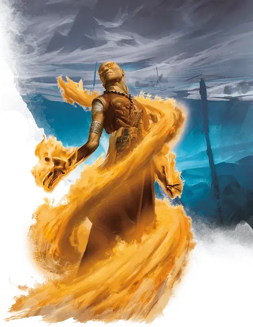

Чародей
Sorcerer

Кость Хитов 1к6 за каждый уровень чародея
Хиты на 1 уровне 6 + модификатор Телосложения
Хиты на следующих уровнях 1к6 (или 4) + модификатор Телосложения (суммарно минимум 1) за каждый уровень чародея после первого
Доспехи нет
Оружие Боевые посохи, дротики, кинжалы, лёгкие арбалеты, пращи
Инструменты нет
Спасброски Телосложение, Харизма
Навыки Выберите два навыка из следующих: Запугивание, Магия, Обман, Проницательность, Религия, Убеждение.
Снаряжение Вы начинаете со следующим снаряжением в дополнение к снаряжению, полученному за вашу предысторию:
• а) лёгкий арбалет и 20 болтов или б) любое простое оружие
• а) мешочек с компонентами или б) магическая фокусировка
• а) набор исследователя подземелий или б) набор путешественника
• Два кинжала
Если вы откажетесь от этого снаряжения, а также от предметов, предлагаемых вашей предысторией, то вы начнёте игру с 3к4 × 10 зм для покупки снаряжения.
| Уровень | Бонус мастерства | Единицы чародейства | Умения | Известные заговоры | Известные заклинания | Ячейки заклинаний на уровень заклинаний | ||||||||
|---|---|---|---|---|---|---|---|---|---|---|---|---|---|---|
| 1 | 2 | 3 | 4 | 5 | 6 | 7 | 8 | 9 | ||||||
| 1 | +2 | - | Происхождение чародея, Использование заклинаний, Дополнительные заклинания | 4 | 2 | 2 | - | - | - | - | - | - | - | - |
| 2 | +2 | 2 | Источник магии | 4 | 3 | 3 | - | - | - | - | - | - | - | - |
| 3 | +2 | 3 | Метамагия, Варианты метамагии | 4 | 4 | 4 | 2 | - | - | - | - | - | - | - |
| 4 | +2 | 4 | Увеличение характеристик, Универсальность чародея | 5 | 5 | 4 | 3 | - | - | - | - | - | - | - |
| 5 | +3 | 5 | Волшебное указание | 5 | 6 | 4 | 3 | 2 | - | - | - | - | - | - |
| 6 | +3 | 6 | Умение происхождения чародея | 5 | 7 | 4 | 3 | 3 | - | - | - | - | - | - |
| 7 | +3 | 7 | - | 5 | 8 | 4 | 3 | 3 | 1 | - | - | - | - | - |
| 8 | +3 | 8 | Увеличение характеристик | 5 | 9 | 4 | 3 | 3 | 2 | - | - | - | - | - |
| 9 | +4 | 9 | - | 5 | 10 | 4 | 3 | 3 | 3 | 1 | - | - | - | - |
| 10 | +4 | 10 | Метамагия | 6 | 11 | 4 | 3 | 3 | 3 | 2 | - | - | - | - |
| 11 | +4 | 11 | - | 6 | 12 | 4 | 3 | 3 | 3 | 2 | 1 | - | - | - |
| 12 | +4 | 12 | Увеличение характеристик | 6 | 12 | 4 | 3 | 3 | 3 | 2 | 1 | - | - | - |
| 13 | +5 | 13 | - | 6 | 13 | 4 | 3 | 3 | 3 | 2 | 1 | 1 | - | - |
| 14 | +5 | 14 | Умение происхождения чародея | 6 | 13 | 4 | 3 | 3 | 3 | 2 | 1 | 1 | - | - |
| 15 | +5 | 15 | - | 6 | 14 | 4 | 3 | 3 | 3 | 2 | 1 | 1 | 1 | - |
| 16 | +5 | 16 | Увеличение характеристик | 6 | 14 | 4 | 3 | 3 | 3 | 2 | 1 | 1 | 1 | - |
| 17 | +6 | 17 | Метамагия | 6 | 15 | 4 | 3 | 3 | 3 | 2 | 1 | 1 | 1 | 1 |
| 18 | +6 | 18 | Умение происхождения чародея | 6 | 15 | 4 | 3 | 3 | 3 | 3 | 1 | 1 | 1 | 1 |
| 19 | +6 | 19 | Увеличение характеристик | 6 | 15 | 4 | 3 | 3 | 3 | 3 | 2 | 1 | 1 | 1 |
| 20 | +6 | 20 | Чародейское восстановление | 6 | 15 | 4 | 3 | 3 | 3 | 3 | 2 | 2 | 1 | 1 |
Описание
Золотые глаза вспыхивают, человек протягивает вперёд руку и высвобождает всепоглощающее пламя, что горит в его жилах. Пока адское пламя бушует вокруг его врагов, кожистые крылья раскрываются у него за спиной, и он взмывает в воздух.
Длинные волосы развеваются от магического ветра, полуэльф широко разводит руки в стороны и запрокидывает голову. Моментально подняв его над землёй, волны магической энергии проходят сквозь него и выплёскиваются в окружающее пространство громадной вспышкой молний.
Крадущийся за сталагмитом полурослик указывает пальцем на троглодита. Огненная струя устремляется из его пальца к существу. С усмешкой он прячется обратно за скалу, не подозревая, что дикая магия изменила цвет его кожи на ярко-синий.
Чародеи являются носителями магии, дарованной им при рождении их экзотической родословной, неким потусторонним влиянием или воздействием неизвестных вселенских сил. Никто не может обучиться чародейству, как, например, выучить язык, так же как никто не может обучить, как прожить легендарную жизнь. Никто не может избрать путь чародейства, сила сама выбирает носителя.
Использовать TCE
Создание персонажа
Грубая магия
Магия является частью каждого чародея, наполняя тело, разум и дух скрытой силой, которая ждёт, когда её используют. Некоторые чародеи владеют магией, которая проистекает из древней родословной, связанной с магией драконов. Другие же несут в себе сырую, неконтролируемую силу, хаотичный шторм, который может выплеснуться самым неожиданным образом.
Проявление сил чародея крайне непредсказуемо. Некоторые драконьи родословные получают ровно одного чародея в каждом поколении, в других же родословных каждый индивид может являться чародеем. В большинстве случаев способность к чародейству возникает случайно. Некоторые чародеи не могут назвать источник своей силы, в то время как другие связывают его со странными событиями в своей жизни. Прикосновение демона, благословление дриады при рождении, или вода из мистического источника — всё это может разжечь искру чародейского дара. Это может быть дар божества магии, воздействие стихийных сил из Внутренних Планов, прикосновение к безумному хаосу Лимбо или понимание внутреннего устройства реальности.
Чародеи не используют книги заклинаний, на которые полагаются волшебники, и, в отличие от колдунов, не полагаются на высокого покровителя, даровавшего им заклятья. Научившись использовать и направлять свою собственную врождённую магию, они могут открыть для себя новые ошеломляющие способы высвобождения этой силы.
Необъяснимые силы
Чародеи довольно редко встречаются в мире, и совсем уж необычно встретить чародея, каким-либо образом не вовлечённого в приключения. Люди с магическими силами, текущими по их жилам, вскоре обнаруживают, что данные силы не могут постоянно дремать. Чародейская магия требует использования, и имеет тенденцию вырываться самым непредсказуемым образом, если её игнорировать. Зачастую, у чародеев туманные мотивы, толкающие их на приключения.
Некоторые ищут более глубокого понимания магических сил, влияющих на них, или разгадок их таинственного происхождения. Другие же надеются найти способ избавления от своего дара, или раскрытия его полного потенциала. Вне зависимости от их целей, чародеи столь же полезны в отряде искателей приключений, как и волшебники. Хотя чародеи и не владеют множеством заклинаний, это с лихвой компенсируется большой гибкостью в использовании тех заклятий, что им известны.
Создание чародея
Самым важным аспектом при создании вашего чародея, является источник его силы. Вы в самом начале выбираете происхождение, которое может быть связано с драконьей родословной или влиянием дикой магии, но конкретный источник вашей силы определяется только вами. Возможно, это семейное проклятье, доставшееся вам от далёких предков? Или какое-нибудь экстраординарное событие оставило своё благословление, даровав врождённые способности к магии, или, может, располосовав вас шрамами?
Как вы ощущаете магические силы, струящиеся сквозь вас? Вы приняли их, попытались освоить или упиваетесь их непредсказуемой природой? Благословление это или проклятье? Искали ли вы их, или они сами нашли вас? Есть ли возможность отказаться от них, и поступили бы вы так, если бы могли? Что вы намерены делать с ними? Возможно, вы чувствуете, что были одарены этой силой для свершения какого то высшего предназначения. Или же, вы могли решить, что такая власть даёт вам право делать всё, что вздумается, и отбирать всё необходимое у тех, кто такой силы не имеет. Возможно, ваши силы связаны с могущественной фигурой, известной в этом мире — фейским существом, благословившим вас при рождении, драконом, который смешал вашу кровь с каплей своей, личем, который создал вас в качестве эксперимента, или божеством, которое избрало вас носителем этой силы.
Быстрое создание
Вы можете быстро создать чародея, следуя этим рекомендациям. Во-первых, у вашей Харизмы должно быть наивысшее значение. Следующей по величине характеристикой должно быть Телосложение. Во-вторых, выберите предысторию «отшельник». В-третьих, получите заговоры луч холода [ray of frost], свет [light], фокусы [prestidigitation] и электрошок [shocking grasp] вместе с заклинаниями 1-го уровня волшебная стрела [magic missile] и щит [shield].
Углублённая предыстория Чародея (XGE)
Когда во время нужды дело доходит до демонстрации своих способностей, чародеям это даётся легче по сравнению с другими персонажами. Источник их силы не только лежит внутри них, но и требует определённых усилий, чтобы сдержать его. Каждый чародей рождается со своей ролью или сталкивается с ней по космической случайности. В отличие от других персонажей, которые должны активно учиться, развивать и исследовать свои таланты, чародеям их сила дается просто так.
Поскольку мысль о том, что среди простого люда путешествует магическое от рождения существо многих пугает, чародеи имеют тенденцию вызывать в других недоверие и подозрительность. Тем не менее, многие чародеи преуспевают в преодолении этих предрассудков через деяния, которые приносят пользу их менее одаренным современникам.
Чародеев часто определяют события, происходящие в момент проявления их силы. Для тех, кто получает её по праву рождения, это проявление — повод для празднования. Другие чародеи становятся изгоями, вынужденными покинуть свой дом после внезапного ужасающего проявления их способностей.
Игра чародеем может быть настолько же приятной, насколько и сложной. В следующих разделах предлагаются рекомендации о том, как сформировать и выделить вашего персонажа.
Источник магии
Некоторые чародеи понимают, откуда исходит их сила, основывая свои суждения на том, как проявляются их способности. Другие могут только догадываться, так как их силы появляются безо всякой причины.
Знает ли ваш персонаж источник своей магической силы? Связано ли это с каким-то дальним родственником, космическим событием или это просто случайность? Если ваш чародей не знает, откуда взялась его сила, ваш Мастер, когда это важно для сюжета кампании, может использовать следующую таблицу (или выбрать источник) и рассказать эту информацию вам.
Источники магии
| к6 | Источник |
| 1 | Ваша сила возникает из родословной вашей семьи. Вы связаны с каким-то могущественным существом, или унаследовали благословение или проклятие. |
| 2 | Вы — реинкарнация существа из другого плана существования. |
| 3 | Могущественная сущность пришла в мир. Его магия изменила вас. |
| 4 | Ваше рождение было предсказано в древнем тексте, и предсказание гласит, что вы рождены, чтобы использовать свою силу для ужасных вещей. |
| 5 | Вы являетесь продуктом тщательного селективного отбора в течение многих поколений. |
| 6 | Вы искусственно созданы в чане алхимиком. |
Реакция
Когда в мире появляется новый чародей и проявляется его сила, при рождении или позже, последствия этого события сильно зависят от того, как его свидетели реагируют на то, что они видели.
Когда проявились силы вашего чародея, как на это отреагировал окружающий вас мир? Другие люди вас поддерживали, боялись или занимали нейтральную позицию?
Реакции
| к6 | Реакция |
| 1 | Окружающие думают, что ваши силы — великое благо, и вы должны использовать их в служении своей общине. |
| 2 | Проявление ваших сил привело к разрушениям и даже смерти, и к вам относятся как к преступнику. |
| 3 | Ваши соседи ненавидят вас и боятся вашей силы, что заставляет их избегать вас. |
| 4 | На вас обратил внимание зловещий культ, который планирует использовать ваши способности. |
| 5 | Люди вокруг вас верят, что ваши силы — это проклятие, наложенное на вашу семью за прошлые преступления. |
| 6 | Считается, что ваши силы связаны с древним родом безумных королей, правление которых предположительно закончились кровавым восстанием более века назад. |
Сверхъестественная метка
В обычное время чародей почти неотличим от обычного человека; он раскрывает свою истинную природу только когда начинает использовать свой дар. Тем не менее, у большинства чародеев есть малозаметная, но выдающая физическая особенность, которая отличает их от других людей.
Если у вашего чародея есть сверхъестественная метка, она может быть легко спрятана, или вы можете гордится ею, постоянно выставляя её напоказ.
Сверхъестественные метки
| к6 | Метки |
| 1 | У ваших глаз необычный цвет, например красный |
| 2 | У вас есть дополнительный палец на одной ноге |
| 3 | Одно ваше ухо заметно больше другого |
| 4 | Ваши волосы растут с невероятной скоростью |
| 5 | Вы постоянно морщите свой нос, пока жуете |
| 6 | Раз в день на вашей шее появляются красные пятна и через час исчезают |
Признак чародейства
Как хорошо известно в мире, некоторые чародеи лучше других контролируют своё колдовство. Иногда дикое проявление магии исходит от чародея, который накладывает заклинание. Но даже когда заклинание проходит, как и планировалось, акт сотворения заклинания часто сопровождается неким признаком, который даёт понять, откуда взялась эта магическая энергия.
Когда ваш чародей накладывает заклинание, проявляются ли признаки чародейства? Связан ли этот знак с вашим происхождением, другим аспектом того, кто вы есть, или этот знак — случайное явление?
Признаки чародейства
| к6 | Признак |
| 1 | Вы произносите вербальные компоненты ваших заклинаний гулким голосом титана. |
| 2 | На мгновение после того как вы наложите заклинание, окружающая вас область становится тёмной и мрачной. |
| 3 | Вы обильно потеете при накладывании заклинания и в течение нескольких секунд после этого. |
| 4 | Всякий раз, когда вы накладываете заклинание, ваши волосы и одежда кратковременно развеваются, словно на ветру. |
| 5 | Если вы стоите, когда накладываете заклинание, вы поднимаетесь на шесть дюймов в воздух и недолго левитируете. |
| 6 | Иллюзорное синее пламя появляется вокруг вашей головы, когда вы начинаете накладывать заклинание, а затем внезапно исчезает. |
Мультиклассирование
МУЛЬТИКЛАССИРОВАНИЕ И Чародей
Если вы используете опциональное правило по мультиклассированию из «Книги игрока», вот что вам нужно знать при выборе чародея в качестве одного из ваших классов.
Минимальные значения характеристик. Вы должны иметь значение Харизмы не ниже 13, чтобы взять уровень в этом классе или взять уровень другого класса, если вы уже являетесь чародеем.
Получаемые владения. Если чародей не является вашим начальным классом, вы не получаете никаких владений, когда берёте свой первый уровень чародея.
Ячейки заклинаний. Добавьте ваш уровень в классе чародея к соответствующим уровням других классов, чтобы определить доступные ячейки заклинаний.
Уровень 1: Происхождение чародея
1-й уровень, умение чародея
Выберите источник, из которого ваш персонаж черпает свою силу. Все источники раскрыты ниже.
Ваш выбор предоставляет вам умения на 1-м, 6-м, 14-м и 18-м уровнях.
Уровень 1: Использование заклинаний
1-й уровень, умение чародея
Определённое событие в вашем прошлом или в жизни ваших родителей или предков оставило на вас неизгладимый отпечаток, связав вас с магией. Ваши заклинания питает некий источник магии, какого бы происхождения он не был. Вы найдёте список заклинаний, доступных чародею в этом разделе: заклинания чародея. Так же правила по использованию заклинаний есть в этой статье: использование заклинаний.
Уровень 1: Заговоры (заклинания 0-го уровня)
На 1-м уровне вам известны четыре заговора, которые вы выбираете из списка заклинаний чародея. Вы обучаетесь дополнительным заговорам чародея на свой выбор по мере роста в уровнях, как это показано в колонке «Известные заговоры».
Уровень 1: Ячейки заклинаний
Таблица «Чародей» показывает, сколько ячеек заклинаний для сотворения заклинаний чародея у вас есть для заклинаний 1-го и других уровней. Для использования заклинания вы должны потратить ячейку соответствующего, либо превышающего уровня. Вы восстанавливаете все потраченные ячейки по окончании продолжительного отдыха.
Например, если вы знаете заклинание 1-го уровня огненные ладони [burning hands], и у вас есть ячейки 1-го и 2-го уровней, вы можете наложить его с помощью любой из этих ячеек.
Уровень 1: Известные заклинания первого и более высоких уровней
Вы знаете два заклинания 1-го уровня на свой выбор из списка заклинаний чародея.
Колонка «Известные заклинания» показывает, когда вы сможете выучить новые заклинания. Уровень заклинаний не должен превышать уровень самой высокой имеющейся у вас ячейки заклинаний. Например, когда вы достигнете 3-го уровня в этом классе, вы можете выучить одно новое заклинание 1-го или 2-го уровня.
Кроме того, когда вы получаете новый уровень в этом классе, вы можете одно из известных вам заклинаний чародея заменить на другое из списка чародея, уровень которого тоже должен соответствовать имеющимся ячейкам заклинаний.
Уровень 1: Базовая характеристика заклинаний
Вы используете Харизму для накладывания заклинаний чародея. Мощь заклинаний зависит от вашей способности проецировать свою волю в реальность. Вы используете Харизму в случаях, когда заклинание ссылается на базовую характеристику. Кроме того, вы используете Харизму при определении Сл спасбросков от ваших заклинаний, и при броске атаки заклинаниями.
Сл спасброска = 8 + ваш бонус мастерства + ваш модификатор Харизмы
Модификатор броска атаки = ваш бонус мастерства + ваш модификатор Харизмы
Уровень 1: Фокусировка заклинания
Вы можете использовать магическую фокусировку в качестве фокусировки для заклинаний чародея.
Уровень 1: Дополнительные заклинания чародея (опционально)
Заклинания из представленного ниже списка расширяют ваш список заклинаний чародея представленный в «Книге игрока». Список отсортирован по уровню заклинаний, а не по уровню персонажа. Если заклинание может быть исполнено как ритуал, то в скобках также будет указано «ритуал».
| Уровень заклинания | Заклинания |
| Заговор | вспышка мечей [sword burst], громовой клинок [booming blade], клинок зеленого пламени [green-flame blade], лассо молнии [lightning lure], расщепление разума [mind sliver] |
| 1 | едкое варево Таши [Tasha’s caustic brew], скольжение [grease] |
| 2 | горящий клинок [flame blade], магическое оружие [magic weapon], психическая плеть Таши [Tasha’s mind whip], пылающий шар [flaming sphere] |
| 3 | крепость интеллекта [intellect fortress], прикосновение вампира [vampiric touch] |
| 4 | огненный щит [fire shield] |
| 5 | длань Бигби [Bigby’s hand] |
| 6 | окаменение [flesh to stone], Отилюков ледяной шар [Otiluke’s freezing sphere], потусторонний облик Таши [Tasha’s otherwordly guise] |
| 7 | сон синей вуали [dream of the blue veil] |
| 8 | демиплан [demiplane] |
| 9 | клинок разрушения [blade of disaster] |
Уровень 2: Источник магии
2-й уровень, умение чародея
Вы получаете доступ к внутреннему источнику магии. Этот источник выражен в единицах чародейства, позволяющих вам создавать разнообразные магические эффекты.
Уровень 2: Единицы чародейства
Вы получаете 2 единицы чародейства, и их становится больше на более высоких уровнях. У вас не может быть этих единиц больше, чем указано в таблице для вашего уровня. Вы восстанавливаете все использованные единицы чародейства по окончании продолжительного отдыха.
Уровень 2: Свободное заклинательство
Вы можете использовать единицы чародейства, чтобы получить дополнительные ячейки заклинаний, и наоборот, пожертвовать ячейками, чтобы получить единицы. Другие способы использования единиц чародейства вы освоите на более высоких уровнях.
Преобразование ячейки заклинания в единицы чародейства. Вы можете в свой ход бонусным действием преобразовать одну ячейку заклинаний в единицы чародейства, количество которых равно уровню ячейки.
Создание ячеек заклинаний. В свой ход вы можете бонусным действием превратить оставшиеся единицы чародейства в дополнительные ячейки заклинаний. Приведённая таблица отображает стоимость создания ячеек разных уровней. Вы не можете создавать ячейки с уровнем выше 5. Созданные ячейки заклинаний исчезают в конце длительного отдыха.
Создание ячеек заклинаний
| Уровень ячеек заклинаний | Единицы чародейства |
| 1 | 2 |
| 2 | 3 |
| 3 | 5 |
| 4 | 6 |
| 5 | 7 |
Уровень 3: Метамагия
3-й уровень, умение чародея
Вы получаете способность подстраивать заклинания под свои нужды. Вы выбираете два варианта метамагии из перечисленных ниже. На 10-м и 17-м уровне вы получаете ещё по одному варианту.
При накладывании заклинания может быть использован только один метамагический вариант, если в его описании не указано обратное.
Уровень 3: Аккуратное заклинание
Когда вы накладываете заклинание, которое вынуждает других существ совершить спасбросок, вы можете защитить некоторых из них от магического воздействия. Для этого вы тратите 1 единицу чародейства и выбираете существ в количестве, равном вашему модификатору Харизмы (минимум одно существо). Указанные существа автоматически преуспевают в спасброске от данного заклинания.
Уровень 3: Далёкое заклинание
При накладывании заклинания, дистанция которого 5 футов и более, вы можете потратить 1 единицу чародейства, чтобы удвоить это расстояние.
При накладывании заклинания с дистанцией «касание», вы можете потратить 1 единицу чародейства, чтобы увеличить это расстояние до 30 футов.
Уровень 3: Непреодолимое заклинание
Когда вы накладываете заклинание, которое вынуждает существо совершить спасбросок для защиты от его эффектов, вы можете потратить 3 единицы чародейства, чтобы одна из целей заклинания совершила первый спасбросок от этого заклинания с помехой.
Уровень 3: Неуловимое заклинание
Во время накладывания заклинания вы можете потратить 1 единицу чародейства, чтобы наложить его без вербальных и соматических компонентов.
Уровень 3: Продлённое заклинание
При накладывании заклинания с длительностью 1 минута или более, вы можете потратить 1 единицу чародейства, чтобы удвоить это время, вплоть до максимального в 24 часа.
Уровень 3: Удвоенное заклинание
Если вы используете заклинание, нацеливаемое только на одно существо и не имеющее дистанцию «на себя», вы можете потратить количество единиц чародейства, равное уровню заклинания (1 для заговоров), чтобы нацелиться им на второе существо-цель в пределах дистанции этого заклинания.
Чтобы применить этот вариант, заклинание не должно быть способно нацеливаться более чем на одну цель на текущем накладываемом уровне. Например, волшебная стрела [magic missile] и палящий луч [scorching ray] не могут быть усилены этой метамагией, а луч холода [ray of frost] и цветной шарик [chromatic orb] — могут.
Уровень 3: Усиленное заклинание
При совершении броска урона от заклинания вы можете потратить 1 единицу чародейства, чтобы перебросить несколько костей урона в количестве не больше вашего модификатора Харизмы (минимум одна). Вы должны использовать новое выпавшее значение.
Вы можете воспользоваться вариантом «усиленное заклинание» даже если вы уже использовали другой вариант метамагии для этого заклинания.
Уровень 3: Ускоренное заклинание
Если вы накладываете заклинание со временем накладывания «1 действие», вы можете потратить 2 единицы чародейства, чтобы наложить это заклинание бонусным действием.
Уровень 3: Ищущее заклинание (опционально)
Опциональный вариант метамагии
Если вы совершаете бросок атаки для заклинания и промахиваетесь, вы можете потратить 2 единицы чародейства, чтобы перебросить к20, и должны использовать новый бросок. Вы можете использовать это умение, даже если вы уже использовали другой вариант метамагии во время накладывания заклинания.
Преобразованное заклинание
Опциональный вариант метамагии
Когда вы накладываете заклинание, которое наносит тип урона из перечисленного списка, вы можете потратить 1 единицу чародейства и изменить этот тип урона на другой из следующих: звук, кислота, огонь, холод, электричество, яд.
Уровень 4: Увеличение характеристик
4-й уровень, умение чародея
При достижении 4-го, 8-го, 12-го, 16-го и 19-го уровней вы можете повысить значение одной из ваших характеристик на 2 или двух характеристик на 1. Как обычно, значение характеристики при этом не должно превысить 20.
Если ваш Мастер разрешает использование черт, вы можете отказаться от преимуществ этого умения при повышении значений характеристик и вместо этого взять черту.
Уровень 4: Универсальность чародея (опционально)
Каждый раз, когда вы достигаете определённого уровня в этом классе и получаете умение «Увеличение характеристик», вы можете сделать одно из следующих действий, отражающих изменения в том, как магия течёт внутри вас:
- Замените один из ваших метамагических вариантов другим доступным вам.
- Замените один заговор, который вы узнали благодаря умению «Использование заклинаний» этого класса, другим заговором из списка заклинаний чародея.
Уровень 5: Волшебное указание (опционально)
Вы можете использовать свой внутренний источник магии, чтобы попытаться обратить неудачу в успех. Когда вы совершаете проверку характеристики и проваливаете её, вы можете потратить 1 единицу чародейства, чтобы перебросить к20, потенциально превращая провал в успех, но должны использовать новый бросок.
Уровень 20: Чародейское восстановление
20-й уровень, умение чародея
Вы восстанавливаете 4 единицы чародейства, когда заканчиваете короткий отдых.
Подклассы
Наследие драконьей крови
Ваша врождённая магия произошла из магии драконов, примешавшейся к вашей крови, или унаследованной вами. Чаще всего, чародеи с таким источником силы могут проследить свою родословную до могучих чародеев древности, заключавших сделки с драконами или даже объявлявших себя потомками драконов. Некоторые из таких наследственных ветвей хорошо известны, но большинство из них скрыты. Или чародей может являться родоначальником такой ветви, получив силу в результате договора или других сверхъестественных обстоятельств.
Уровень 1: Драконий предок
Вы выбираете вид вашего дракона предка. Связанный с ним вид урона используется в ваших умениях.
Драконий предок
| Дракон | Вид урона |
| Белый | Холод |
| Бронзовый | Электричество |
| Зеленый | Яд |
| Золотой | Огонь |
| Красный | Огонь |
| Латунный | Огонь |
| Медный | Кислота |
| Серебряный | Холод |
| Синий | Электричество |
| Чёрный | Кислота |
Вы можете говорить, читать и писать на Драконьем языке. Кроме того, когда вы взаимодействуете с драконами и совершаете проверку Харизмы, ваш бонус мастерства удваивается для этой проверки.
Уровень 1: Драконья устойчивость
Магия, струящаяся через ваше тело, проявляет физические черты ваших предков драконов. Максимум ваших хитов увеличивается на 1 на 1-м уровне и на 1 на каждом уровне, полученном в данном классе.
Кроме того, некоторые участки вашей кожи покрыты тонкой драконьей чешуёй. Если вы не носите доспехов, ваш Класс Доспеха равен 13 + модификатор Ловкости.
Уровень 6: Родство со стихией
Когда вы накладываете заклинание, причиняющее урон вида, связанного с вашим драконьим предком, вы добавляете модификатор Харизмы к одному броску урона этого заклинания. В это же самое время вы можете потратить 1 единицу чародейства, чтобы получить сопротивление этому виду урона на 1 час.
Уровень 14: Крылья дракона
Вы получаете способность расправить драконьи крылья у себя за спиной, получая при этом скорость полёта, равную вашей текущей скорости. Вы можете создать их бонусным действием в свой ход. Крылья существуют, пока вы не развеете их бонусным действием в свой ход.
Вы не можете призвать свои крылья, нося броню, если, конечно, броня не изготовлена специально для этого. Одежда, также не приспособленная под крылья, может быть уничтожена, когда вы призываете их.
Уровень 18: Образ дракона
Вы можете вызвать ужасный образ своего предка дракона, повергая им в ужас врагов. Вы можете действием потратить 5 единиц чародейства, чтобы окружить себя аурой страха или трепета (на ваш выбор), радиусом 60 футов. В течение 1 минуты, или пока вы не утратите концентрацию (как если бы вы концентрировались на заклинании), все враждебные существа, начинающие ход в этой ауре, должны преуспеть в спасброске Мудрости, иначе они станут очарованными (если вы выбрали трепет) или испуганными (если вы выбрали страх) до окончания действия ауры. Существо, преуспевшее в спасброске, получает иммунитет к вашей ауре на 24 часа.
Дикая магия
Ваша магия исходит от диких сил хаоса, лежащих в основе мироздания. Вы, возможно, подверглись воздействию грубой магии в той или иной форме. Возможно, она просочилась через портал, ведущий в Лимбо, Стихийные Планы или таинственный Дальний Предел. Может быть, вы были благословлены могущественной феей или отмечены демоном. Или ваша магия может быть случайностью вашего рождения, без очевидной причины. Вне зависимости от её происхождения, хаотическая магия бурлит внутри вас, готовая вырваться наружу.
Уровень 1: Волна дикой магии
Ваше колдовство может вызвать волны дикой магии. Один раз за ход, сразу после накладывания вами заклинания чародея как минимум 1-го уровня, Мастер может попросить вас бросить к20. Если выпадает «1», бросьте кость по таблице «Волна дикой магии» для создания случайного магического эффекта. Если эффект волны является заклинанием, он слишком непредсказуем, чтобы его можно было модифицировать метамагией. Если заклинание-эффект в обычных обстоятельствах требует концентрацию, то в данном случае оно не требует концентрацию и длится свою максимальную длительность.
Уровень 1: Поток хаоса
Вы можете манипулировать силами случая и хаоса, чтобы получить преимущество для одного броска атаки, проверки характеристики или спасброска. Сделав это, вы должны совершить продолжительный отдых, прежде чем вы сможете использовать это умение ещё раз.
В любой момент до того как вы восстановите это умение, сразу после использования вами заклинания чародея как минимум 1-го уровня, Мастер может попросить вас бросить кость по таблице «Волна дикой магии». После этого вы восстанавливаете использование этого умения.
Уровень 6: Подчинение удачи
Вы получаете возможность менять судьбу с помощью дикой магии. Когда другое существо, видимое вами, совершает бросок атаки, проверку характеристики или спасбросок, вы можете реакцией потратить 2 единицы чародейства и бросить 1к4. Результат броска станет бонусом или штрафом (на ваш выбор) к броску существа. Вы можете сделать это после броска существа, но до того, как начнут действовать эффекты от броска.
Уровень 14: Контролируемый хаос
Вы получаете толику контроля над волнами дикой магии. Каждый раз, когда вы совершаете бросок по таблице дикой магии, вы можете совершить два броска и использовать любой из двух.
Уровень 18: Разрушительные заклинания
Разрушительная энергия ваших заклинаний увеличивается. Когда вы совершаете бросок урона от заклинания, и на одной из костей выпадает максимально возможное значение, выберите одну из этих костей и бросьте её ещё раз. Добавьте выпавшее значение к урону. Вы можете использовать это умение только один раз в ход.
Волна дикой магии
| к100 | Эффект |
| 01-02 | Совершайте бросок по этой таблице в начале каждого своего хода в течение следующей минуты, игнорируя результат «01–02». |
| 03-04 | В течение минуты вы можете видеть невидимых существ, если у вас есть линия обзора до них. |
| 05-06 | В свободном пространстве в пределах 5 футов от вас появляется модрон, выбранный и контролируемый Мастером. Модрон исчезает через 1 минуту. |
| 07-08 | Вы накладываете огненный шар [fireball] как заклинание 3-го уровня с центром на себе. |
| 09-10 | Вы накладываете волшебную стрелу [magic missile] как заклинание 5-го уровня. |
| 11-12 | Бросьте 1к10. Ваш рост изменяется на количество дюймов, равное результату броска. Если бросок нечётный, вы уменьшаетесь. Если бросок чётный, вы растёте. |
| 13-14 | Вы накладываете заклинание смятение [confusion] с центром на себе. |
| 15-16 | В течение следующей минуты вы восстанавливаете по 5 хитов в начале каждого своего хода. |
| 17-18 | У вас вырастает длинная борода из перьев, которая остаётся, пока вы не чихнёте, и в этот момент перья разлетаются во все стороны. |
| 19-20 | Вы накладываете заклинание скольжение [grease] с центром на себе. |
| 21-22 | Существа получают помеху к спасброскам от следующего заклинания, которое вы наложите в течение следующей минуты, требующего совершить спасбросок. |
| 23-24 | Ваша кожа окрашивается в ярко-синий цвет. Заклинание снятие проклятья [remove curse] отменяет этот эффект. |
| 25-26 | На вашем лбу на минуту появляется глаз. В течение этого времени, вы совершаете с преимуществом проверки Мудрости (Восприятие), полагающиеся на зрение. |
| 27-28 | В течение следующей минуты все ваши заклинания со временем накладывания «1 действие» могут быть наложены бонусным действием. |
| 29-30 | Вы телепортируетесь на расстояние до 60 футов в свободное пространство по вашему выбору, которое видите. |
| 31-32 | Вы перемещаетесь на Астральный план до конца своего следующего хода, после чего вы вернётесь в пространство, ранее занимаемое, или ближайшее свободное пространство, если это пространство занято. |
| 33-34 | Урон от следующего заклинания, наносящего урон и наложенного вами в течение следующей минуты, будет максимальным. |
| 35-36 | Бросьте к10. Ваш возраст изменяется на число лет, равное броску. Если бросок нечётный, вы молодеете (минимум на 1 год). Если бросок чётный, вы стареете. |
| 37-38 | В пределах 60 футов от вас в свободном пространстве появляются 1к6 фламфов [flumph], контролируемых Мастером и напуганных вами. Они исчезают через 1 минуту. |
| 39-40 | Вы восстанавливаете 2к10 хитов. |
| 41-42 | Вы превращаетесь в горшок с цветами до начала своего следующего хода. Будучи растением, вы недееспособны и уязвимы для всех видов урона. Если ваши хиты опускаются до 0, ваш горшок раскалывается, и вы возвращаетесь в свою форму. |
| 43-44 | В течение следующей минуты вы можете в каждый свой ход бонусным действием телепортироваться на расстояние до 20 футов |
| 45-46 | Вы накладываете заклинание левитация [levitate] на себя. |
| 47-48 | В пределах 5 футов от вас появляется единорог [unicorn], контролируемый Мастером. Он исчезает через 1 минуту. |
| 49-50 | Вы не можете говорить в течение следующей минуты. Всякий раз, когда вы пытаетесь говорить, из вашего рта вылетают розовые пузырьки. |
| 51-52 | В течение следующей минуты рядом с вами парит призрачный щит, предоставляющий бонус +2 к КД и иммунитет к волшебной стреле. |
| 53-54 | Вы получаете иммунитет к воздействию алкоголя на ваш организм в течение следующих 5к6 дней. |
| 55-56 | У вас выпадают все волосы, но отрастают обратно за 24 часа. |
| 57-58 | В течение следующей минуты все легковоспламеняющиеся предметы, не несомые и не носимые другим существом, которых вы касаетесь, загораются. |
| 59-60 | Вы восстанавливаете самую низкоуровневую ячейку заклинания, потраченную вами. |
| 61-62 | В течение следующей минуты вы должны кричать, когда говорите. |
| 63-64 | Вы накладываете заклинание туманное облако [fog cloud] с центром на себе. |
| 65-66 | До трёх существ на ваш выбор в пределах 30 футов от вас получают урон электричеством 4к10. |
| 67-68 | Вы испуганы ближайшим к вам существом до конца своего следующего хода. |
| 69-70 | Все существа в пределах 30 футов от вас становятся невидимыми на 1 минуту. Невидимость прекращается, если существо совершает атаку или накладывает заклинание. |
| 71-72 | Вы получаете на 1 минуту сопротивление всем видам урона. |
| 73-74 | Случайное существо в пределах 60 футов от вас становится отравленным на 1к4 часа. |
| 75-76 | Вы в течение минуты излучаете яркий свет в радиусе 30 футов. Все существа, оканчивающие ход в пределах 5 футов от вас, становятся ослепшими до конца своего следующего хода. |
| 77-78 | Вы накладываете на себя заклинание превращение [polymorph]. Если вы проваливаете спасбросок, то на время действия заклинания превращаетесь в овцу. |
| 79-80 | В течение минуты в пределах 10 футов от вас в воздухе порхают иллюзорные бабочки и лепестки цветов. |
| 81-82 | Вы можете немедленно совершить одно дополнительное действие. |
| 83-84 | Все существа в пределах 30 футов от вас получают урон некротической энергией 1к10. Вы восстанавливаете хиты, равные сумме причинённого урона. |
| 85-86 | Вы накладываете заклинание отражения [mirror image]. |
| 87-88 | Вы накладываете заклинание полёт [fly] на случайное существо в пределах 60 футов от вас. |
| 89-90 | Вы становитесь невидимым на 1 минуту. При этом другие существа не могут услышать вас. Невидимость оканчивается, если вы атакуете или накладываете заклинание. |
| 91-92 | Если вы погибнете в течение следующей минуты, то мгновенно вернётесь к жизни, как если бы вас воскресили заклинанием реинкарнация [reincarnate]. |
| 93-94 | Ваш размер на 1 минуту увеличивается на одну категорию. |
| 95-96 | Вы и все существа в пределах 30 футов от вас получаете на 1 минуту уязвимость колющему урону. |
| 97-98 | В течение следующей минуты вы окружены тихой неземной музыкой. |
| 99-00 | Вы восстанавливаете все потраченные единицы чародейства. |
Божественная душа
Источник: «Xanathar’s Guide to Everything».
Иногда искра магии, питающая чародея, исходит от божественного начала, мерцающего в душе. Наличие такой благословенной души является признаком того, что ваша врождённая магия может исходить из далекой, но могущественной семейной связи с божественным существом. Возможно, ваш предок был ангелом, превращённый в смертного и посланный сражаться во имя своего бога. Или ваше рождение может быть предрешено древним пророчеством, что делает из вас служителя богов или избранным сосудом божественной магии.
Традиционная религиозная иерархия часто видит в божественных душах угрозу из-за их природного магнетизма. Эти чародеи, повелевая силой богов, могут подорвать существующий строй и заявить, что они напрямую связаны с божеством.
В некоторых культурах только тот, кто обладает божественной душой, может стать священнослужителем. На таких землях духовенство, как правило, является наследным и передаётся из поколения в поколение в виде нескольких избранных семей или кланов.
Уровень 1: Божественная магия
Ваша связь с божеством позволяет вам изучать заклинания из класса жреца. Когда ваше умение «Использование заклинаний» позволяет вам изучить или заменить заговор чародея или заклинание чародея 1-го уровня или выше, вы можете выбрать новое заклинание из списка заклинаний жреца или списка заклинаний чародея.
Вы должны соблюдать все остальные ограничения при выборе заклинания, но это заклинание для вас становится заклинанием чародея. Кроме того, выберите склонность к источнику вашей божественной силы: добро, зло, закон, хаос или нейтралитет.
Вы изучаете дополнительное заклинание, основанное на этой склонности, как показано ниже. Это заклинание для вас становится заклинанием чародея, но оно не учитывается при подсчёте известных вам заклинаний чародея. Если вы позже замените это заклинание, вы должны заменить его заклинанием из списка заклинаний жреца.
| Склонность | Заклинание |
| Добро | лечение ран [cure wounds] |
| Зло | нанесение ран [inflict wounds] |
| Закон | благословение [bless] |
| Хаос | порча [bane] |
| Нейтралитет | защита от зла и добра [protection from evil and good] |
Уровень 1: Любимчик богов
Божественная сила охраняет вашу судьбу.
Если вы проваливаете спасбросок или промахиваетесь броском атаки, вы можете бросить 2к4 и добавить выпавшее значение к результату, возможно тем самым изменив исход.
Использовав это умение, вы не можете использовать его повторно до окончания короткого или продолжительного отдыха.
Уровень 6: Усиленное лечение
Божественная энергия, проходящая через вас, может усилить лечащие заклинания. Всякий раз, когда вы или союзник в пределах 5 футов от вас совершаете бросок кости, чтобы определить количество хитов, которое восстанавливается заклинанием, вы можете потратить 1 единицу чародейства чтобы один раз перебросить любое количество костей, при условии, что вы не являетесь недееспособным. Вы можете использовать это умение только один раз за ход.
Уровень 14: Крылья из другого мира
Вы можете бонусным действием расправить пару спектральных крыльев за спиной. Пока крылья находятся там, вы получаете скорость полёта 30 футов.
Крылья не исчезают до тех пор, пока вы не станете недееспособны, не умрёте или не рассеете их бонусным действием. Склонность, которую вы выбрали для своего умения «Божественная магия», определяет внешний вид спектральных крыльев: орлиные крылья для добра или закона, крылья летучей мыши для зла или хаоса и крылья стрекозы для нейтралитета.
Уровень 18: Неземное восстановление
Вы получаете возможность переносить серьёзнейшие повреждения. Бонусным действием вы можете восстановить половину своих максимальных хитов в случае, если у вас осталось меньше половины хитов.
Использовав это умение, вы не можете использовать его повторно до окончания продолжительного отдыха.
Теневая магия
Источник: «Xanathar’s Guide to Everything».
Вы — существо тени, потому что ваша врождённая магия исходит из самого Царства Теней. Вы могли бы проследить свою родословную до сущности из этого места или, возможно, вы подверглись воздействию её беспощадной энергии и были трансформированы ею.
Сила теневой магии накладывает странный покров на ваш внешний вид. Искра жизни, которая поддерживает вас, приглушена, как будто она изо всех сил пытается противостоять тёмной энергии, которая проникает в вашу душу. Вы можете самостоятельно выбрать причуду для вашего персонажа или определить её случайным образом по таблице «Причуды теневых чародеев».
Причуды теневых чародеев
| к6 | Причуда |
| 1 | Вы всегда холодны на ощупь. |
| 2 | Когда вы спите, кажется, что вы не дышите (хотя вы все равно должны дышать, чтобы жить). |
| 3 | Вы почти не истекаете кровью, даже когда получили тяжёлые ранения. |
| 4 | Ваше сердце бьётся один раз в минуту. Это событие иногда вас удивляет. |
| 5 | У вас есть проблема с тем, чтобы вспомнить, что к живым существам и трупам следует относиться по-разному. |
| 6 | Вы моргнули. Один раз. На прошлой неделе. |
Уровень 1: Глаза тьмы
Вы получаете тёмное зрение в пределах 120 футов. Когда вы достигаете 3-го уровня в этом классе, вы изучаете заклинание тьма [darkness], которое не учитывается при подсчёте известных вам заклинаний чародея. Кроме того, вы можете наложить его, потратив 2 единицы чародейства или ячейку заклинания. Если вы накладываете его с использованием единиц чародейства, вы можете видеть сквозь эту тьму, созданную заклинанием.
Уровень 1: Сила могилы
Ваше существование в сумеречном состоянии между жизнью и смертью затрудняет ваше поражение. Когда урон уменьшает ваши хиты до 0, вы можете совершить спасбросок Харизмы (Сл 5 + полученный урон).
В случае успеха вы остаётесь с 1 хитом, вместо того чтобы упасть без сознания. Вы не можете использовать это умение, если ваши хиты уменьшены до 0 от урона излучением или уроном от критического удара.
После успешного спасброска вы не можете использовать это умение вновь до окончания продолжительного отдыха.
Уровень 1:
Уровень 6: Гончая дурного знамения
Вы получаете возможность вызвать воющее существо тьмы, чтобы преследовать своих врагов. Бонусным действием вы можете потратить 3 единицы чародейства, чтобы магически вызвать гончую дурного знамения [hound of ill omen], нацеливая её на одно существо, которое вы можете видеть в радиусе 120 футов. Гончая использует параметры лютого волка [dire wolf], со следующими изменениями:
- Гончая Среднего размера, не Большого, и она считается монстром, а не зверем.
- Она появляется с количеством временных хитов, равных половине вашего уровня чародея.
- Она может перемещаться через других существ и объекты, как если бы они были труднопроходимой местностью. Гончая получает 5 урона силовым полем, если она завершает свой ход внутри объекта.
- В начале своего хода гончая автоматически узнаёт местоположение своей цели. Если та была спрятанной, то перестаёт быть спрятанной от гончей.
Гончая появляется в свободном пространстве по вашему выбору в пределах 30 футов от цели. Совершите бросок инициативы для гончей. В свой ход она может двигаться только к своей цели по самому прямому маршруту, и она может использовать своё действие только для атаки своей цели. Гончая может совершать провоцированные атаки, но только против своей цели. Кроме того, в то время как гончая находится в пределах 5 футов от цели, цель совершает с помехой спасброски против любого заклинания, которое вы накладываете. Гончая исчезает, если её хиты уменьшаются до 0, если хиты её цели уменьшены до 0 или спустя 5 минут.
Уровень 14: Хождение по теням
Вы получаете способность переходить из одной тени в другую. Когда вы находитесь в тусклом свете или темноте вы можете бонусным действием волшебным образом телепортироваться на расстояние до 120 футов в свободное пространство, которое вы можете видеть, которое также находится в тусклом свете или темноте.
Уровень 18: Мрачная форма
Вы можете бонусным действием потратить 6 единиц чародейства, чтобы волшебным образом превратить себя в теневую форму. В этой форме вы получаете сопротивление всему урону, кроме урона силовым полем и излучением, и вы можете перемещаться через других существ и объекты, как если бы они были труднопроходимой местностью. Вы получаете 5 урона силовым полем, если завершаете свой ход внутри объекта. Вы остаетесь в этой форме на 1 минуту.
Эффект заканчивается раньше, если вы становитесь недееспособны, умираете или если вы отмените его бонусным действием.
Штормовое колдовство
Источник: «Xanathar’s Guide to Everything».
Ваша врождённая магия исходит от силы стихии воздуха. Многие с этой силой могут отследить свою магию до около-смертных переживаний, вызванных Великим Дождём, но, возможно, вы родились во время бушующего шторма, настолько сильного, что народ всё ещё рассказывает истории о нём, или ваша родословная может включать влияние могущественных воздушных существ, таких как джинн. В любом случае штормовая магия пронизывает само ваше существование.
Штормовые чародеи — бесценные члены экипажа корабля. Их магия позволяет им контролировать ветер и погоду в непосредственной близости от себя. Их способности также полезны в отражении нападений сахуагинов, пиратов и других водных угроз.
Уровень 1: Уста ветра
Тайная магия, которой вы повелеваете, наполняется стихией воздуха. Вы можете говорить, читать и писать на Первичном. Знание этого языка позволяет понимать и быть понятым теми, кто говорит на его диалектах: Акван, Ауран, Игнан и Терран.
Уровень 1: Бурная магия
Вы можете в свой ход бонусным действием заставить завихряющиеся порывы стихийного ветра на мгновение окружить вас прямо перед тем или прямо после того, как вы накладываете заклинание 1-го уровня или выше. Это позволяет вам отлететь на расстояние до 10 футов, не провоцируя атак.
Уровень 6: Сердце шторма
Вы получаете сопротивление урону звуком и электричеством.
Кроме того, каждый раз, когда вы начинаете накладывать заклинание 1-го уровня или выше, которое наносит урон звуком или электричеством, из вас выплёскивается магия шторма. Этот всплеск направлен в существ по вашему выбору, которых вы можете видеть в пределах 10 футов от вас, и наносит урон звуком или электричеством (выбирайте каждый раз, когда эта способность активируется), равный половине вашего уровня чародея.
Уровень 6: Управление штормом
Вы получаете возможность контролировать погоду вокруг вас. Если идёт дождь, вы можете действием заставить дождь прекратиться в сфере с радиусом 20 футов с центром на вас.
Вы можете окончить этот эффект бонусным действием. Если ветрено, вы можете каждый раунд бонусным действием выбирать направление ветра в сфере с радиусом 100 футов с центром на вас. Ветер дует в этом направлении до конца вашего следующего хода. Это умение не изменяет скорость ветра.
Уровень 14: Ярость шторма
Когда по вам попадают рукопашной атакой, вы можете реакцией нанести атакующему урон электричеством. Урон равен вашему уровню чародея. Атакующий должен также совершить спасбросок Силы против Сл вашего спасброска от заклинаний. При провале атакующего отталкивает по прямой линии на расстояние до 20 футов от вас.
Уровень 18: Душа ветра
Вы получаете иммунитет к урону звуком и электричеством.
Вы также получаете магическую скорость полёта 60 футов. Действием вы можете уменьшить скорость полёта до 30 футов на 1 час и выбрать несколько существ в пределах 30 футов от себя, в количестве, равном 3 + ваш модификатор Харизмы. Выбранные существа получают магическую скорость полёта 30 футов на 1 час.
Как только вы уменьшите скорость полёта таким образом, вы не сможете сделать это снова, до окончания короткого или продолжительного отдыха.
Аберрантный разум
Источник: «Tasha’s Cauldron of Everything»
Щупальца, психические силы, существа из мест далеко за звёздами — что для одного плохой сон, для другого — прекрасное времяпрепровождение.
-ТАША
Чужеродное влияние оплело своими щупальцами ваш разум, даруя вам псионическую силу. Теперь вы можете касаться разумов других существ с помощью этой силы и изменять мир вокруг себя, используя её для управления магической энергией в мультивселенной. Будет ли эта сила сиять в вас, как маяк надежды для других? Или вы станете источником ужаса для тех, кто почувствует укол вашего разума и станет свидетелем странных проявлений вашей мощи?
Как чародей с аберрантным разумом, вы сами решаете, как вы приобрели свои силы. Вы с ними родились? Или какое-то событие позже в жизни заставило вас засиять в псионическом пробуждении? Обратитесь к таблице «Аберрантное происхождение» для возможного объяснения ваших сил.
Аберрантное происхождение
| к6 | Происхождение |
| 1 | На вас оказало влияние искажение Дальнего Предела. Вы убеждены, что прямо сейчас на вас растёт щупальце, но никто его не видит. |
| 2 | Психический ветер с Астрального плана принёс вам псионическую энергию. Когда вы используете свои силы, вокруг вас сверкают слабые искорки. |
| 3 | Когда-то на вас оказали влияние доминирующие силы аболета, и с тех пор в вашем разуме осталась психическая заноза. |
| 4 | Вам имплантировали головастика свежевателей разума, но цереморфоз так и не завершился. И теперь его псионическая сила — ваша. Когда вы используете её, ваша плоть блестит странной слизью. |
| 5 | В детстве у вас был воображаемый друг, похожий на фламфа или странное существо, напоминающее утконоса. В один из дней он одарил вас псионическими силами, которые в конечном итоге оказались не такими уж воображаемыми. |
| 6 | Ваши кошмары шепчут вам правду: ваши псионические способности не принадлежат вам. Вы черпаете их из своего паразитического близнеца! |
Уровень 1: Псионические заклинания
Когда вы достигаете определённого уровня, вы узнаёте новые заклинания в этом классе, как показано в таблице «Псионические заклинания». Для вас они считаются заклинаниями чародея, однако они не учитываются в общем количестве заклинаний, которые вы знаете.
Каждый раз, когда вы получаете уровень в этом классе, вы можете заменить одно заклинание, полученное от этого умения, другим заклинанием того же уровня. Новое заклинание должно быть из школы Прорицания или Очарования из списка заклинаний чародея, колдуна или волшебника.
Псионические заклинания
| Уровеньчародея | Заклинания |
| 1 | диссонирующий шёпот [dissonant whisper], расщепление разума [mind sliver], руки Хадара [arms of Hadar] |
| 3 | обнаружение мыслей [detect thoughts], умиротворение [calm emotions] |
| 5 | голод Хадара [hunger of Hadar], послание [sending] |
| 7 | призыв духа аберрации [summon aberration], Эвардовы чёрные щупальца [Evard’s black tentacles] |
| 9 | ментальная связь Рэри [Rary’s telepathic bond], телекинез [telekinesis] |
Уровень 1: Телепатическая речь
Вы можете установить телепатическую связь между своим разумом и разумом другого существа. Бонусным действием выберите одно существо, которое вы можете видеть в пределах 30 футов. Вы и выбранное существо можете говорить телепатически друг с другом, пока находитесь в пределах количества миль друг от друга, равному вашему модификатору Харизмы (минимум 1 миля). Чтобы вы могли понимать друг друга, каждый из вас должен мысленно говорить на языке, знакомом другому.
Телепатическая связь длится в течение количества минут, равному вашему уровню чародея. Она заканчивается раньше, если вы становитесь недееспособны или умираете, или если вы используете это умение, чтобы сформировать связь с другим существом.
Уровень 6: Псионическое чародейство
Когда вы накладываете любое заклинание 1-го уровня или выше, используя своё умение «Псионические заклинания», вы можете наложить его, израсходовав ячейку заклинаний как обычно или потратив количество единиц чародейства, равное уровню заклинания. Если вы накладываете заклинание, используя единицы чародейства, то оно не требует ни вербальных, ни соматического компонентов, а также материальных компонентов, если они не расходуются заклинанием.
Уровень 6: Психическая защита
Вы получаете сопротивление урону психической энергией и совершаете с преимуществом спасброски против очарования или испуга.
Уровень 14: Откровение во плоти
Вы можете высвободить аберрантную истину, скрытую внутри вас. Бонусным действием вы можете потратить 1 или более единиц чародейства, чтобы волшебным образом преобразовать свое тело на 10 минут. За каждую потраченную единицу чародейства вы можете получить одно из следующих преимуществ по вашему выбору, действие которого длится до окончания трансформации:
- Вы можете увидеть любое невидимое существо в радиусе 60 футов, если оно не находится за полным укрытием. Ваши глаза также становятся чёрными или превращаются в извивающиеся сенсорные усики.
- Вы получаете скорость полёта, равную вашей скорости ходьбы, и можете парить. Когда вы летите, ваша кожа блестит от слизи или сияет потусторонним светом.
- Вы получаете скорость плавания, равную удвоенной скорости ходьбы, и можете дышать под водой. Кроме того, из вашей шеи вырастают жабры, либо они выходят веером из-за ваших ушей, ваши пальцы становятся перепончатыми, или у вас вырастают извивающиеся реснички, которые прорастают через одежду.
- Ваше тело, вместе с любым снаряжением, которое вы носите или несете, становится скользким и податливым. Вы можете проходить через любое узкое пространство до 1 дюйма без протискивания и можете потратить 5 футов передвижения, чтобы вырваться из немагических пут или захвата.
Уровень 18: Искажающий взрыв
Вы можете высвободить свою аберрантную силу в виде искривляющей пространство аномалии. Действием вы можете телепортироваться в свободное пространство, которое вы можете видеть в пределах 120 футов. Сразу же после того, как вы исчезнете, каждое существо в пределах 30 футов от места, где вы находились, должно совершить спасбросок Силы против Сл ваших заклинаний. В случае провала существо получает 3к10 урона силовым полем и притягивается по прямой к месту, где вы находились, останавливаясь в свободном пространстве как можно ближе к вашей прежней позиции. В случае успеха существо получает вдвое меньше урона и не притягивается.
Когда вы используете действие подобным образом, вы не сможете сделать это вновь, пока не закончите продолжительный отдых или не потратите 5 единиц чародейства на повторное использование этого умения.
Заводная душа
Источник: «Tasha’s Cauldron of Everything»
Я редко говорю людям, что знаю модронский, потому что, как правило, они просто хотят научиться ругаться, так что давайте сейчас с этим разберемся.
Урок первый: «бип буп» и другие щелчки.
-ТАША
С помощью магии вас наполнили силами космического порядка. Эта сила проистекает из Механуса или подобного ему царства — плана существования, сформированного исключительно соображениями эффективности, как у часового механизма. Вы или кто-то из вашего рода могли быть вовлечены в махинации модронов — существ порядка, населяющих Механус. Возможно, кто-то из ваших предков даже принимал участие в Великом Марше модронов. Каким бы ни было её происхождение внутри вас, сила порядка может показаться странной другим, но для вас это часть огромной и славной системы.
Уровень 1: Заводная магия
Когда вы достигаете определённого уровня, вы узнаёте новые заклинания в этом классе, как показано в таблице «Заводные заклинания». Для вас они считаются заклинаниями чародея, однако они не учитываются в общем количестве заклинаний, которые вы знаете.
Каждый раз, когда вы получаете уровень в этом классе, вы можете заменить одно заклинание, полученное от этого умения, другим заклинанием того же уровня. Новое заклинание должно быть из школы Ограждения или Преобразования из списка заклинаний чародея, колдуна или волшебника.
Заводные заклинания
Кроме того, обратитесь к таблице «Проявления порядка» и выберите или случайным образом определите способ проявления вашей связи с порядком в момент накладывания любого из ваших заклинаний чародея.
Проявления порядка
| к6 | Проявление |
| 1 | Позади вас парят призрачные шестерёнки. |
| 2 | В ваших глазах вращаются стрелки часов. |
| 3 | Ваша кожа сияет медным блеском. |
| 4 | Ваше тело покрывают парящие уравнения и геометрические объекты. |
| 5 | Ваша заклинательная фокусировка временно принимает форму Крошечного часового механизма. |
| 6 | Вы и те, на кого воздействует ваша магия, слышат тиканье механизмов или звон часов. |
Уровень 1: Восстановление баланса
Ваша связь с планом абсолютного порядка позволяет сгладить моменты хаоса. Когда существо, которое вы можете видеть в пределах 60 футов, собирается совершить бросок к20 с преимуществом или помехой, вы можете реакцией заставить его совершить этот бросок без преимущества и помехи.
Вы можете использовать это умение количество раз, равное вашему бонусу мастерства. Вы восстанавливаете все потраченные использования после окончания продолжительного отдыха.
Уровень 6: Бастион закона
Вы можете подключиться к великому уравнению существования, чтобы наделить существо мерцающим щитом порядка. Действием вы можете потратить от 1 до 5 единиц чародейства, чтобы создать магическую защиту вокруг себя или другого существа, которое вы можете видеть в пределах 30 футов. Защита длится до тех пор, пока вы не окончите продолжительный отдых или пока вы не используете это умение снова.
Щит представлен количеством к8, равным количеству единиц чародейства, потраченных на его создание. Когда охраняемое существо получает урон, оно может потратить некоторое количество этих костей, уменьшив получаемый урон на результат броска потраченных костей.
Уровень 14: Медитация порядка
Вы получаете возможность настроить своё сознание на бесконечные вычисления Механуса. Бонусным действием вы можете войти в это состояние на 1 минуту. В течение этого времени броски атаки против вас не могут совершаться с преимуществом, и всякий раз, когда вы совершаете бросок атаки, проверку характеристики или спасбросок, вы можете рассматривать бросок «9 »или ниже на к20 как «10».
Когда вы используете бонусное действие подобным образом, вы не сможете сделать это вновь, пока не закончите продолжительный отдых или не потратите 5 единиц чародейства на повторное использование этого умения.
Уровень 18: Заводная кавалькада
Вы призываете духов порядка для устранения беспорядка вокруг себя. Действием вы вызываете духов в кубе с длиной ребра в 30 футов с центром на вас. Духи выглядят как модроны или другие конструкты по вашему выбору. Духи неосязаемы и неуязвимы, и они создают нижеперечисленные эффекты внутри куба, прежде чем исчезнуть:
- Духи восстанавливают до 100 хитов, распределённых по вашему выбору между любым количеством существ по вашему выбору в кубе.
- Любые повреждённые объекты, полностью находящиеся в кубе, мгновенно ремонтируются.
- На выбранных вами существах и объектах в кубе заканчиваются эффекты всех заклинаний 6-го уровня и ниже
Когда вы используете действие подобным образом, вы не сможете сделать это вновь, пока не закончите продолжительный отдых или не потратите 7 единиц чародейства на повторное использование этого умения.
Лунное чародейство
Источник: «Dragonlance: Shadow of the Dragon Queen»
Во многих мирах луна является почитаемым небесным телом, обладающим магическими свойствами. На Кринне боги магии связаны с тремя лунами мира. В мире Торил богиня Селунэ использует свет луны для борьбы с тьмой. В Эберроне ученые Драконического пророчества расшифровывают древние тайны по растущим и убывающим двенадцати лунам этого мира.
Вы или кто-то из вашего рода подвергся воздействию концентрированной магии луны (или лун) вашего мира, что наделило вас лунной магией. Возможно, ваш предок участвовал в друидическом ритуале, связанном с затмением, или мистический осколок луны разбился рядом с вами. Как бы ни проявлялась ваша магия, ваша связь с луной очевидна, когда вы накладываете заклинания чародея — возможно, ваши зрачки светятся цветом луны из вашего мира, или вокруг вас вращаются призрачные образы лунных фаз, или возникают какие-то другие эффекты.
Уровень 1: Лунное воплощение
Вы изучаете дополнительные заклинания, когда достигаете определённых уровней в этом классе согласно таблице «Лунные заклинания». Каждое заклинание считается заклинанием чародея для вас, однако оно не учитывается в общем списке заклинаний чародея, известных вам.
Лунные заклинания
Каждый раз, когда вы заканчиваете продолжительный отдых, вы можете выбрать, какая фаза луны будет питать вашу магию: Полнолуние, Новолуние или Полумесяц. Пока вы находитесь в выбранной фазе, вы можете наложить заклинание 1-го уровня соответствующей фазы из таблицы «Лунные Заклинания» один раз, не тратя ячейки заклинаний. Наложив заклинание таким образом, вы больше не сможете сделать это повторно до окончания продолжительного отдыха.
Уровень 1: Лунный Огонь
Вы можете призвать ослепляющий свет луны по своему зову. Вы изучаете заговор священное пламя [sacred flame], который не учитывается в общем списке заговоров чародея, известных вам. Когда вы накладываете его, вы можете сделать целью одно существо как обычно или двух существ, которые находятся в пределах дистанции на расстоянии 5 футов друг от друга.
Уровень 6: Лунные Дары
Фазы вашего Лунного Воплощения воздействуют на вашу метамагию. Каждая фаза луны связана с заклинаниями указанных ниже школ:
- Полнолуние. Заклинания школ Ограждения и Прорицания.
- Новолуние. Заклинания школ Очарования и Некромантии.
- Полумесяц. Заклинания школ Иллюзий и Преобразования.
Каждый раз, когда вы используете «Метамагию» на заклинание школы, связанной с фазой вашего Лунного Воплощения, в которой вы находитесь сейчас, вы можете снизить количество потраченных единиц чародейства на 1 (минимум 0). Вы можете снизить количество единиц чародейства для вашей Метамагии количество раз, равное вашему бонусу мастерства. Вы восстанавливаете все потраченные использования после завершения продолжительного отдыха.
Уровень 6: Убывание И Рост
Вы получаете усиленный контроль над фазами вашей лунной магии. Бонусным действием вы можете потратить 1 единицу чародейства, чтобы сменить фазу вашего Лунного Воплощения на другую.
Теперь вы можете наложить одно заклинание 1-го уровня из каждой фазы луны таблицы «Лунные Заклинания» один раз, не тратя ячейки заклинания, при условии, что ваша текущая фаза совпадает с фазой заклинания лунной фазы. Если вы наложили заклинание лунной фазы таким образом, вы больше не сможете сделать это повторно до окончания продолжительного отдыха.
Уровень 14: Лунное Усиление
Сила луны наполняет вас. Каждый раз, когда вы выбираете фазу луны, влияющую на вашу магию, вы также получаете следующие преимущества, связанные с конкретной фазой:
- Полнолуние. Вы можете бонусным действием излучать яркий свет в пределах 10 футов и тусклый свет в пределах дополнительных 10 футов или погасить свет. Дополнительно вы и существа по вашему выбору совершают с преимуществом проверки Интеллекта (Расследование) и Мудрости (Восприятие), пока они находятся в пределах яркого света, излучаемого вами.
- Новолуние. Вы совершаете с преимуществом проверки Ловкости (Скрытность). Дополнительно, пока вы находитесь во тьме, броски атаки по вам совершаются с помехой.
- Полумесяц. Вы получаете сопротивление урону некротической энергией и урону излучением.
Уровень 18: Лунный Феномен
Бонусным действием вы можете задействовать особые силы, даруемые фазой вашего Лунного Воплощения. Альтернативно, в рамках бонусного действия, которое вы предпринимаете для изменения своей фазы луны с помощью умения «Убывание и рост», вы можете немедленно использовать силу лунной фазы, в которую вы входите:
- Полнолуние. На мгновение, вы излучаете очень яркий лунный свет. Каждое существо по вашему выбору в пределах 30 футов от вас должно преуспеть в спасброске Телосложения против Сл ваших заклинаний, иначе станет ослеплённым до конца его следующего хода. Дополнительно одно существо по вашему выбору в этой области восстанавливает 3к8 хитов.
- Новолуние. На мгновение, вы излучаете поток угнетающего мрака. Каждое существо по вашему выбору в пределах 30 футов должно преуспеть в спасброске Ловкости против Сл ваших заклинаний, иначе получит 3к10 урона некротической энергией и его скорость станет равна 0 до конца его следующего хода. Дополнительно вы становитесь невидимым до конца вашего следующего хода или до следующего момента сразу после того, как вы совершите бросок атаки или наложите заклинание.
- Полумесяц. Вы двигаетесь на границе между светом и тьмой. Вы можете магическим образом телепортироваться в свободное пространство, которое вы можете видеть на расстоянии 60 футов. Вы можете взять с собой одно согласное существо, которое вы видите в пределах 5 футов от себя. Это существо телепортируется в свободное пространство по вашему выбору, которое вы можете видеть в пределах 5 футов от своего места назначения. Дополнительно вы и это существо также получаете сопротивление ко всем видам урона до начала вашего следующего хода.
Использовав одно из этих бонусных действий, вы больше не сможете использовать его повторно, пока не закончите продолжительный отдых или не потратите 5 единиц чародейства для его повторного применения.
Пиромант — неофициальный
Источник: «Plane Shift: Kaladesh»
Данный архетип был взят из источника под названием «Plane Shift: Kaladesh». Хоть это сеттинговое дополнение для одного из миров Magic: The Gathering и было выпущено Wizards of the Coast, создателями D&D, оно всё ещё не является официальным. Если вы хотите использовать этот архетип, вам следует посоветоваться с вашим Мастером.
— Господин Финик
Ваша врождённая магия проявляется в пламени. Вы — это ваш огонь, а ваш огонь — это вы.
Уровень 1: Пламенное сердце
Когда вы начинаете накладывать заклинание 1 уровня или выше, наносящее урон огнём, из вашего тела начинает извергаться пламя. Все существа по вашему выбору в пределах 10 футов от вас получают урон огнём, равный половине вашего уровня чародея.
Уровень 6: Огонь внутри вен
Вы получаете сопротивление урону огнём. Кроме того, накладываемые вами заклинания игнорируют сопротивление урону огнём.
Уровень 14: Ярость пироманта
Когда по вам попали атакой, вы можете реакцией нанести атакующему урон огнём. Урон равен вашему уровню чародея, и он игнорирует сопротивление урону огнём.
Уровень 18: Пламенная душа
Вы получаете иммунитет к урону огнём. Кроме того, любые накладываемые вами заклинания или сотворяемые вами эффекты игнорируют сопротивление урону огнём, а иммунитет к урону огнём от ваших заклинаний и эффектов считается сопротивлением.
Маг Призмари — неофициальный
Источник: «Unearthed Arcana: Mages of Strixhaven»
Данная «Unearthed Arcana» не является актуальной. От данного архетипа отказались и его уже не реализуют в каких-либо официальных книгах.
— Господин Финик
Маги Призмари используют потоки элементальной энергии для выражения своего естества, а также того, как они видят мир. Для них магия и движение — это одно и то же. Каждое из них использует только сообразительность, при помощи которой и можно добиться мастерства. В своей погоне за искусством некоторые Маги Призмари фокусируются на совершенствовании до мельчайших деталей своих техник, когда как другие предпочитают выпустить свои дикие и необузданные креативные видения в виде ослепительного великолепия, сотворенного из стихийной силы.
Уровень 1: Креативные навыки
АкробатикаАтлетикаВыступлениеПрирода
Уровень 1: Кинетический артистизм
Вы можете совершать Рывок бонусным действием. Когда вы используете это бонусное действие, выберите один из описанных ниже дополнительных эффектов:
- Леденящий взмах. Ледяная вода окружает вас. До конца вашего хода, вы можете перемещаться по поверхности воды так, словно это безвредная твердая земля. Дополнительно, когда вы выходите из пространства в пределах 5 футов от существа, вы можете заставить это существо совершить спасбросок Силы против Сл ваших заклинаний. При провале существо падает ничком. Существо может находиться под воздействием этой воды только один раз в каждый ход.
- Огненный шторм. Пламя вьется вокруг вас при каждом шаге. Единожды до конца вашего хода вы можете заставить каждое существо в пределах 5 футов от вас совершить спасбросок Ловкости против Сл ваших заклинаний. При провале существо получает урон огнём, равный 1к4 + модификатор характеристики заклинателя.
- Громогласный разряд. Вы принимаете форму стремительной шаровой молнии. До конца вашего хода вы можете передвигаться через пространство других существ, а также не провоцируете атаки. Если вы заканчиваете свой ход внутри существа, вас выталкивают в ближайшее свободное пространство.
Вы можете использовать это бонусное действие количество раз, равное вашему бонусу мастерства. Вы восстанавливаете все потраченные использования после окончания продолжительного отдыха.
Уровень 6: Любимая стихия
Вы сумели придать четкую форму своему стихийному самовыражению так, чтобы оно максимально подходило вашим целям. Выберите один из следующих типов урона: холод, огонь или электричество. Вы получаете сопротивление к выбранному типу урона.
Дополнительно, когда вы накладываете заклинание, которое использует выбранный вами тип урона, вы излучаете невероятно прекрасную ауру артистизма в пределах 5 футов от вас во всех направлениях (но не проходящую сквозь полное укрытие). Аура активна до конца вашего следующего хода. Пока аура активна, каждое существо по вашему выбору получает сопротивление к выбранному типу урона, пока существо находится в пределах действия ауры — вы концентрируете свой любимый элемент так, чтобы он окружал союзников.
Вы можете изменить тип урона каждый раз, когда заканчиваете продолжительный отдых.
Уровень 14: Сосредоточенное выражение
Оттачивая свои таланты, вы умело наполняете свои действия еще более мощным воплощением стихийной силы. Один раз в ход, когда вы наносите урон как минимум одной цели, вы получаете дополнительный эффект, который определяется выбранным типом урона в умении «Любимая стихия»:
- Холод. Одна из целей по вашему выбору дополнительно получает 1к6 урона холодом и должна совершить спасбросок Телосложения против Сл ваших заклинаний. При провале скорость цели снижается на 10 до конца её следующего хода, так как лед замедляет её. Цель может находиться под воздействием льда только один раз в раунд.
- Огонь. Одна из целей по вашему выбору дополнительно получает 1к6 урона огнём. Укрепляющее пламя начинает плясать вокруг одного существа по вашему выбору в пределах 30 футов от вас. Выбранное существо получает 1к6 временных хитов.
- Электричество. Одна из целей по вашему выбору дополнительно получает 1к6 урона электричеством и должна совершить спасбросок Ловкости против Сл ваших заклинаний. При провале существо не может использовать реакции до конца своего следующего хода, так как разряды электричество пронзают её тело.
Уровень 18: Безупречная физическая форма
Ваша неустанная самоотдача и обучение привили в вас невероятное чувство точности и грации в вашем искусстве. Вы получает владение спасбросоком Ловкости, если вы им не владели раньше. Дополнительно, когда вы совершаете спасбросок Ловкости, вы можете при выпадении на к20 результата «1–9» считать, что выпало «10».
Маг Квандрикса — неофициальный
Источник: «Unearthed Arcana: Mages of Strixhaven»
Данная «Unearthed Arcana» не является актуальной. От данного архетипа отказались и его уже не реализуют в каких-либо официальных книгах.
— Господин Финик
Для тех, кто встает на путь Мага Квандрикса, математика и магия идут рука об руку. Такие индивидуумы учатся тому, как разбирать природные феномены на числовые составные части и, при помощи манипуляции с ними, изменять реальность вокруг себя. Их таланты разнятся: начиная от осязаемой физики (к примеру манипулированием роста растений и распределением элементов вероятности и ускорения) и заканчивая причудливыми теоретическими упражнениями, искажающими основы самого пространства и себя.
Уровень 1: Заклинания Квандрикса
Вы изучаете заговор указание [guidance], а также заклинание 1-го уровня направляющий снаряд [guiding bolt]. Вы изучаете дополнительные заклинания при достижении определенного уровня в классе, как и показано в таблице ниже.
Каждое из этих заклинаний считается для вас заклинанием чародея и не учитывается в общем количестве известных вам заклинаний.
Заклинания Квандрикса
| Уровень чародея | Заклинания |
| 3 | увеличение/уменьшение [enlarge/reduce], шипы [spike growth] |
| 5 | аура живучести [aura of vitality], ускорение [haste] |
| 7 | власть над водами [control water], свобода перемещения [freedom of movement] |
| 9 | круг силы [circle of power], создание прохода [passwall] |
Уровень 1: Функции вероятности
Повторяя математические модели реальности, вы можете изменить шансы в пользу существа. Когда вы накладываете заклинание, которое использует ячейку заклинаний, а его целью является минимум 1 существо, вы можете выбрать это существо или другое существо в пределах 30 футов от него (включая себя) и добавить один из следующих эффектов:
- Убывающая функция. Выбранное существо должно преуспеть в спасброске Мудрости против Сл ваших заклинаний, иначе это существо должно бросить к6 и вычесть выпавшее число от своего следующего броска атаки, которое оно совершит до начала вашего следующего хода.
- Возрастающая функция. Один раз до начала вашего следующего хода выбранное существо может бросить к6 и добавить выпавшее значение к броску атаки или спасброску по своему выбору. Существо может бросить к6 после броска к20, но оно должно решить совершать ли бросок до любых эффектов, наложенных на бросок.
Уровень 6: Изменение скорости
Вы учитесь манипуляции кинетическими формулами и изменять скорость другого существа. Когда существо, которое вы можете видеть, начинает свой ход или передвигается в пределах 30 футов от вас, вы можете использовать вашу реакцию и заставить это существо совершить спасбросок Харизмы против Сл ваших заклинаний. Существо может добровольно провалить этот спасбросок. При провале существо телепортируется в свободное пространство по вашему выбору, которое вы можете видеть в пределах 30 футов от вас.
Уровень 14: Нулевое уравнение
При помощи тщательных вычислений вы окружаете ваших врагов абстрактными уравнениями, которое ослабляют их мощь. Один раз в ход сразу же после того, как вы нанесли урон существу, вы можете заставить это существо совершить спасбросок Телосложения против Сл ваших заклинаний. При провале существо получает помеху на спасброски Силы и Ловкости, а атаки оружием этого существа наносят только половину урона. Этот эффект длится до начала вашего следующего хода.
Уровень 18: Квантовый скачок
Ваши математические знания расширились настолько, что вы способны изменять основополагающие уравнения самого естества. Вы получаете сопротивление к дробящему, рубящему и колющему урону.
Дополнительно вы можете перемещаться сквозь других существ и объекты так, словно они являются труднопроходимой местностью. Однако вы получаете 1к10 урона силовым полем за каждые 5 футов передвижения, пока находитесь внутри существа или объекта. Если вы заканчиваете свой ход внутри существа или объекта, вас выталкивает в ближайшее свободное пространство, где вы были ранее.
Душа великана — неофициальный
Источник: «Unearthed Arcana — Giant Souls Sorcerer»
Данная «Unearthed Arcana» не является актуальной. Этот архетип наверняка уже не реализуют в каких-либо официальных книгах.
— Господин Финик
Великаны когда-то жили в легендарном царстве, известном как Остория, рае для их народа, что отражало их мастерство в царстве смертных. Со временем Остория пала, а великаны были рассеяны и разбиты. В ту мифическую эпоху великаны даровали нескольким избранным из маленького народа осколок своей великой силы. Эти привилегированные люди попали в ту же трагедию, что и Остория. С того времени они распространились по множеству миров мультивселенной. Время от времени один из их потомков проявляет дары, переданные великанами, наделяя их чародейской магией, которая позволяет им управлять стихиями и обретать мощь великана.
Уровень 1: Стойкость Йотуна
Стойкость великанов наполняет ваше тело. Максимальное количество хитов увеличено на 1, а также, каждый раз, когда вы впоследствии будете получать уровень, максимум ваших хитов будет дополнительно увеличиваться на 1.
Уровень 1: Метка Наследия
1-й уровень, умение души великана
Вы обнаруживаете в себе врожденные магические способности, которые зависят от вашего наследия от великанов. Выберите один из типов великанов, представленных в таблице «Метки наследия». На 1-м и 3-м уровнях вы изучаете заклинание, которое соответствует выбранному вами типу, как и показано в таблице. Эти заклинания считаются заклинаниями чародея для вас, однако они не учитываются в общем количестве заклинаний, которые вы знаете.
Таблица Метки наследия
Уровень 6: Душа утерянной Остории
Вы получаете бонусы каждый раз, когда накладываете одно из заклинаний, дарованных вам умением «Метка наследия».
Каменный великан. Сразу же после того, как вы накладываете заклинание из таблицы «Метка наследия», вы получаете бонус к Классу Доспеха, равный вашему модификатору Телосложения (минимум 1) до конца вашего следующего хода.
Морозный великан. Сразу же после того, как вы накладываете заклинание из таблицы «Метка наследия», вы получаете временные хиты, количество которых равно вашему модификатору Телосложения (минимум 1). Однако, если вы наложили заклинание доспех Агатиса [armor of Agathys], то вы увеличиваете количество временных хитов от заклинания на количество, равное вашему модификатору Телосложения (минимум 1).
Облачный великан. Сразу же после того, как вы накладываете заклинание из таблицы «Метка наследия», вы можете магически телепортироваться бонусным действием. Вы можете переместиться в любое свободное пространство, которое вы можете видеть, на количество футов, равное 10 + ваш модификатор Телосложения.
Огненный великан. Вы получаете бонус к броскам урона заклинаний из таблицы «Метка наследия». Этот бонус равен вашему модификатору Телосложения (минимум 1).
Холмовой великан. Сразу же после того, как вы накладываете заклинание из таблицы «Метка наследия», вы выбираете целью двух существ в пределах 5 футов от вас, которых вы можете видеть. Каждая цель должна преуспеть в спасброске Силы против сложности ваших заклинаний. В случае провала существо будет отброшено от вас на расстояние, равное 5 + модификатор Телосложения (минимум 1) футам. Цель может добровольно провалить спасбросок.
Штормовой великан. Сразу же после того, как вы накладываете заклинание из таблицы «Метка наследия», до трёх существ по вашему выбору, которых вы можете видеть в пределах 30 футов, получают урон электричеством, равный вашему модификатору Телосложения (минимум 1).
Уровень 14: Ярость павшей Остории
Вы получаете возможность взывать к душам древних предков, которые наполнят ваше тело. Когда вы накладываете заклинание чародея, тратя ячейку заклинания, вы можете увеличить свой размер — к примеру, со Среднего до Большого.
Этот эффект держится 1 минуту. Действие заканчивается раньше, если вы умираете или становитесь недееспособными.
Вы получаете следующие преимущества под действием эффекта:
- Ваше количество хитов, а также максимальное количество хитов увеличивается на 1 за каждый уровень чародея;
- Досягаемость ваших атак увеличивается на 5 футов;
- Ваша скорость передвижения увеличивается на 5 футов;
- Вы совершаете проверки и спасбросков Силы с преимуществом.
- Вы получаете бонус к броскам урона рукопашным оружием. Этот бонус равен вашему модификатору Телосложения (минимум 1).
Когда вы используете это умение, то повторно сможете применить его только после короткого или продолжительного отдыха
Уровень 18: Благословение Всеотца
Ваш показатель Телосложения увеличивается на 2, максимум 22. В дополнении к этому теперь вы можете использовать «Ярость павшей Остории» дважды между отдыхами, однако не больше одного раза за ход. Если вы используете это умение, находясь под эффектом «Ярости павшей Остории», то увеличенный размер, хиты, досягаемость и скорость перекроют друг друга и не дадут эффекта.
Душа феникса — неофициальный
Источник: «Unearthed Arcana — Sorcerer»
Данная «Unearthed Arcana» не является актуальной. Этот архетип наверняка уже не реализуют в каких-либо официальных книгах.
— Господин Финик
Ваша сила исходит от негасимого пламени, которым питается легендарный феникс. Вы или ваши предки, возможно, послужили фениксу хорошую службу, или же вы родились в его присутствии. В любом случае, малая часть силы феникса живет внутри вас.
Эта сила – смешанное благословление. Как и мифическое существо, вы можете призывать энергию пламени и получаете возможность обмануть саму смерть. Однако, сила имеет свою цену. Пламя внутри вас бурлит и рвётся наружу. Вы замечаете за собой, что невольно подпитываете источники огня. Вы тяжело переносите тот факт, что позволили пламени погаснуть, и чувствуете удовлетворение, когда держите зажжённый факел или сидите перед костром.
Важно то, что дар не предоставляет защиту от огня. Вы так же уязвимы к пламени, как и любое другое существо, включая вашу собственную магию. Маги феникса могут использовать свою силу для того, чтобы вытащить себя из лап смерти, однако попадают они в них в основном из-за своей же вспыльчивой натуры или из-за того, что полагаются исключительно на разрушительную магию.
Эти чародеи – скитальцы поневоле. Вольная сущность их магии напрягает людей вокруг. Если в городе случается пожар, магу феникса лучше бежать, неважно, виновен он в пожаре или нет. Огонь – опасная сила, и маги феникса славятся (заслуженно или нет) безрассудным поведением, будучи уверенными, что сущность феникса всегда спасёт их.
Черты характера Души Феникса
| к6 | Черта |
| 1 | Вы невольно зажигаете маленькие огоньки, которые тут же гаснут. |
| 2 | Вы демонически хохочете, когда выпускаете свои огненные чары. |
| 3 | Вы восхищаетесь огнём, даже если в нём горят ваши друзья. |
| 4 | Вы покрыты ожогами, напоминающими о первом проявлении ваших способностей |
| 5 | Вам нравится обугленная пища. |
| 6 | Вам море по колено, настолько вы безбашены. |
Уровень 1: Поджог
Вы получаете возможность поджигать предметы касанием. Действием вы можете магически поджечь горючий предмет, которого вы коснулись, например, факел, трут или кромку занавесок.
Уровень 1: Пламенная вуаль
Вы можете выпустить огонь феникса, полыхающий внутри вас.
Бонусным действием вы магическим образом укрываете себя вуалью кружащего пламени, в то время как ваши глаза светятся словно раскалённые угли. В течении одной минуты, вы получаете следующие преимущества:
- Вы испускаете яркий свет в радиусе 30 футов и тусклый свет ещё на 30 футов.
- Любое существо получает урон огнём равный вашему модификатору Харизмы, если оно попадает по вам рукопашной атакой на расстоянии до 5 футов или касается вас.
- Когда вы совершаете бросок урона огнём в свой ход, бросок получает бонус, равный вашему модификатору Харизмы
Вы можете повторно использовать эту способность только после продолжительного отдыха.
Уровень 6: Искра феникса
Энергия пламени внутри вас неугомонно и беспощадно растёт. Перед лицом поражения, оно вырывается наружу, дабы защитить вас своим огненным раскатом.
Если ваши хиты уменьшаются до 0, вы можете реакцией выпустить искру феникса. В этом случае, ваши хиты уменьшается лишь до 1, и каждое существо в радиусе 10 футов от вас получает урон огнём, равный половине от вашего уровня чародея + модификатор Харизмы. Если вы использовали умение находясь под эффектом «Пламенной вуали», это умение наносит урон огнём, равный вашему уровню чародея + удвоенный модификатор Харизмы, при этом «Пламенная вуаль» тут же исчезает.
Вы можете повторно использовать это умение только после продолжительного отдыха.
Уровень 14: Подпитывающее пламя
Ваши огненные заклинания приносят спокойствие и восстанавливают вас. Когда вы используете ячейку для накладывания заклинания на большем уровне, которые при этом включают в себя бросок урона огнём, вы восстанавливаете хиты, равные уровню ячейки + ваш модификатор Харизмы.
Уровень 18: Форма феникса
Вы наконец обуздали искру огня, танцующую внутри вас. Под воздействием «Пламенной вуали» вы получаете дополнительные преимущества:
- Вы получаете скорость полёта 40 футов и можете парить.
- Вы получаете сопротивление всем видам урона.
- Если вы используется «Искру феникса», то наносите ей дополнительные 20 урона огнём каждому существу.
Магия камня — неофициальный
Источник: «Unearthed Arcana — Sorcerer»
Данная «Unearthed Arcana» не является актуальной. Этот архетип наверняка уже не реализуют в каких-либо официальных книгах.
— Господин Финик
Ваша магия исходит от мифической связи между вашей душой и магией камня. Возможно, у вас есть дальний предок с плана земли или ваша семья получила великое благословение взамен службе лордам дао. В любом случае, вы повелеваете магией земли.
Ваша связь с землёй дарует вам невероятную прочность. Маги камня обладают природным талантам к сражениям. Стальной клинок ощущается как естественной продолжения вашего тела и вы имеете природную сноровку в обращении с щитами и оружием. В бою вы обычно находитесь в самой гуще сражения, полагаясь на особые способности, способные защитить вас, и на свою магию и металлическое оружие, способные сокрушить ваших врагов.
Уровень 1: Бонусное владение
Вы получаете владение щитами, простым и воинским оружием.
Уровень 1: Магия металла
Ваша близость с металлом позволяет изучить некоторые не-чародейские заклинания, ориентированные на атаку оружием. Когда ваш уровень позволяет изучить заклинание соответствующего уровня, вы можете выбрать заклинания из списка ниже, в дополнение к списку своих обычных заклинаний. Все ограничения в выборе заклинаний остаются в силе, и заклинание считается для вас заклинанием чародея.
Уровень 1: Прочность камня
Ваша связь с камнем дарует вам особую стойкость. Максимальное значение ваших хитов увеличивается на 1, и вы получаете 1 дополнительный хит с каждым новым уровнем.
Действием вы можете получить базовый КД равный 13 + ваш модификатор Телосложения в случае, если вы не носите броню. При этом ваша кожа становится похожей на камень. Эффект длится пока вы его не отмените бонусным действием, не станете недееспособны, или не наденете любую броню, кроме щита.
Уровень 6: Каменная Эгида
Ваш контроль над магией камня усиливается и вы можете использовать её для защиты своих союзников.
Бонусным действием, вы можете даровать эгиду одному из союзников в пределах 60-ти футов от вас, которого вы можете видеть. Эгида представляет собой тускло-серую ауру земной магии, защищающую цель. Любой дробящий, колющий или рубящий урон по цели уменьшается на 2 + ваш уровень чародея, делённый на 4. Эффект длится одну минуту или до тех пор, пока вы не используете его снова, или пока не окажетесь недееспособны.
Кроме того, если существо в пределах 60 футов, которое вы видите, атакует защищенную цель рукопашной атакой, вы можете реакцией телепортироваться в незанятую клетку в зоне видимости до 5 футов от атакующего. Вы можете телепортироваться только в случае, если вы и атакующий находитесь на одной поверхности. Затем вы можете совершить одну атаку рукопашным оружием по атакующему. Если вы попадаете, атака наносит дополнительные 1к10 урона силовым полем. Дополнительный урон увеличивается до 2к10 на 11-ом уровне и до 3к10 на 17-ом уровне.
Уровень 14: Каменная заточка
Ваше мастерство владения магией земли позволяет дополнить ею свои заклинания. Когда вы накладываете заклинание, наносящее урон, выберите одно существо, по которому был нанесён урон этим заклинанием. Это существо получает дополнительный урон силовым полем, равный половине вашего уровня чародея. Это умение может быть использовано только один раз за каждое накладывание заклинания.
Уровень 18: Эгида Мастера Земли
Когда вы используете «Каменную Эгиду» для защиты союзника, вы можете выбрать до трёх существ, которые также получат её бонусы.
Магия моря — неофициальный
Источник: «Unearthed Arcana — Sorcerer»
Данная «Unearthed Arcana» не является актуальной. Этот архетип наверняка уже не реализуют в каких-либо официальных книгах.
— Господин Финик
Сила воды заключается в её гибкой, упругой и неугомонной природе. Вода позволяет судну плыть по ней или ныряльщику погружаться в неё, при этом не оставляя на ней ни следа. Вода, бегущая вниз по горе, достигает моря. Она может огибать и идти через долины и спускать по холмам, но она медленно и постепенно вновь переходит в волны. Те, чьих душ коснулась сила воды, повелевают схожей силой. Ваше наследие связано с могучими созданиями моря, такими как нереиды, лорды мерфолки и элементали.
Подобно реке, вы слышите зов океана. Зов всегда звучит в вашем сердце, и вы никогда не обретаете полного спокойствия, пока находитесь не рядом с морем.
Уровень 1: Морская душа
Cвязь с морем гарантирует чародею способность дышать под водой, а так же скорость плавания, равную скорости ходьбы.
Уровень 1: Проклятия моря
Вы изучаете секрет усиления ваших заклинаний водным проклятием.
Когда вы попадаете по существу заговором или когда существо проваливает спасбросок против вашего заговора, вы можете проклясть цель до конца вашего следующего хода или до того, как вы проклянете другое существо этой способностью.
Один раз в ваш ход, если вы используете заклинание, вы можете пробудить проклятие, если заклинание наносит урон холодом или урон электричеством по проклятой цели или заставляет её двигаться. В таком случае, цель получает дополнительный эффект, описанный ниже. При этом проклятие снимается, если заклинание не было заговором (вы сами выбираете эффект, если заклинание наносит несколько видов урона):
- Урон холодом. Если цель получает урон холодом от вашего заклинания, то её скорость уменьшается на 15 футов до конца вашего следующего хода. Если заклинание само по себе уже замедляет скорость цели, то используется наибольшее замедление (эффекты не суммируются)
- Урон электричеством. Если цель получает урон электричеством от вашего заклинания, то цель получает дополнительный урон электричеством, равный вашему модификатору Харизмы.
- Движение. Если цель была отброшена вашем заклинанием, то дистанция, на которую её отбросило, увеличивается на 15 футов.
Уровень 6: Водная защита
Вы получаете сопротивление урону огнём.
Вы также получаете способность защищаться, на мгновение переходя в водную форму. Реакцией, если по вам попали атакой и вы получаете дробящий, колющий или рубящий урон, уменьшите урон на число, равное вашему уровню чародея + ваш модификатор Харизмы. После этого вы можете передвинуться на 30 футов, не провоцируя атак.
Вы можете повторно использовать это умение только после короткого или продолжительного отдыха.
Уровень 14: Непостоянная форма
Вы получаете способность переходить в жидкое состояние во время движения.
Если вы двигаетесь в свой ход, вы получаете только половину урона от провоцированных атак, а также вы можете проходить сквозь занятые врагами клетки, однако не можете закончить ход в них.
В свой ход вы можете протиснуться в любую щель диаметром не менее 3 дюймов без протискивания. Если вы останавливаетесь в пространстве на один размер меньше вашего, то становитесь подвержены обычным эффектам протискивания. Вы не можете сами остановиться в пространстве, меньшем, чем на один ваш размер и, если вы вынуждены остановиться в нём, то вы тут же обратно перемещаетесь в пространство, в которое можете поместиться.
Уровень 18: Водная душа
Вы изменены силой моря. Вы получаете следующие преимущества:
- Вам больше не нужно есть, пить и спать.
- Все критические попадания по вам считаются обычными попаданиями.
- Вы получаете сопротивление дробящему, колющему и рубящему урону.
Дитя рун — неофициальный
Источник: «Tal’Dorei Campaign Guide»
Данный материал был взят из источника под названием «Tal’Dorei Campaign Guide», что является продуктом Мэтта Мёрсера, Мастера Подземелий шоу Critical Role. Хоть этот архетип и был создан уважаемым в кругах D&D человеком, он всё ещё не является официальным. Если вы хотите использовать этот архетип, вам следует посоветоваться с вашим Мастером.
— Господин Финик
Плетение и поток магии таинственны и страшны для многих во всей Экзандрии. Многие изучают природу магии в надежде научиться использовать её, в то время как чародеи обладают врождённым талантом преобразовывать и использовать блуждающие нити силы, наполняющие мир. Некоторые чародеи обнаруживают, что их собственные тела являются проводником для таких энергий, их плоть собирает и хранит остатки магии в виде природных рун. Эти аномалии известны в ученых кругах как дети рун.
Таланты детей рун достаточно редки, многие ищут их для изучения, будь то маги или учёные, ведомые верой, что секреты, заключенные в детях рун, помогут понять многие тайны магии. Другие ищут их для порабощения, используя их тела в качестве зарядов для заклинаний, способствующих их собственным дьявольским задумкам. Такое обращение на протяжении всей Эпохи Арканума вынудило немногих существующих детей рун скрывать свое естество. Это задача не из лёгких, учитывая разоблачающий характер их дара.
Уровень 1: Эссенция рун
Ваше тело начинает источать врождённую магическую энергию в виде природных рун, которые скрываются под вашей кожей. Вы начинаете с одной эссенцией рун и получаете дополнительную руну каждый раз, когда получаете новый уровень в этом классе. Руны могут появиться в любом месте на вашем теле. Первая руна обычно появляется на лбу. В инертном состоянии они невидимы.
После того как вы потратили единицы чародейства для любого из ваших классовых умений, в конце вашего хода руны, количество которых равно потраченным единицам чародейства, начинают светиться накопленной энергией, становясь заряженными рунами. Если вы используете заряженную руну для использования умений дитя рун, она возвращается к инертному состоянию.
Бонусным действием вы можете потратить любое количество единиц чародейства, чтобы преобразовать равное количество эссенций рун в заряженные руны. Если у вас нет единиц чародейства и заряженных рун, вы можете действием преобразовать одну эссенцию рун в заряженную руну.
Если у вас 5 и более заряженных рун, вы излучаете яркий свет в радиусе 5 футов. Все заряженные руны возвращаются к инертному состоянию, после того как вы совершите продолжительный отдых.
Уровень 1: Глифы защиты
Вы можете выпустить накопленную энергию магии из ваших рун, чтобы поглотить или отразить угрожающие вам атаки. Каждый раз, когда вы получаете урон от атаки, опасности или заклинания, вы можете реакцией потратить любое количество заряженных рун, бросая 1к6 за каждую использованную заряженную руну. Вы вычитаете полученный результат из урона, нанесенного вам атакой, опасностью или заклинанием.
Начиная с 6-го уровня, вы можете действием использовать заряженную руну, чтобы передать глиф защиты существу, которого вы касаетесь. Существо может иметь только один глиф защиты, который существует в течение 1 часа, или пока существу не будет нанесён урон с помощью атаки, опасности или заклинания. Когда существо в следующий раз получит урон из любого вышеперечисленного источника, бросьте 1к6 и вычтите полученный результат из нанесённого урона. После этого глиф исчезает.
Уровень 6: Сигильное усиление
Вы можете использовать руны для временного усиления ваших физических способностей. Бонусным действием вы используете заряженную руну, чтобы усилить ваши Силу, Ловкость или Телосложение, совершая с преимуществом спасброски выбранной характеристики до начала вашего следующего хода. Вы можете сохранять это преимущество и дальше, если используете для этого заряженные руны в начале каждого вашего следующего хода.
Уровень 6: Проявление надписей
Вы можете раскрыть скрытые руны и чары окружающие вас. Действием вы можете потратить заряженную руну, чтобы все скрытые магические знаки, руны, варды или глифы в пределах 15 футов от вас начали в течение 1 раунда светиться тусклым светом в радиусе 5 футов.
Уровень 14: Рунический поток
Вы можете направить накопленную руническую энергию для наполнения ваших заклинаний подавляющей магической силой, игнорируя самую стойкую защиту. Каждый раз, когда вы накладываете заклинание, вы можете использовать количество заряженных рун, равное уровню заклинания, позволяя ему игнорировать любое сопротивление или иммунитет к типу урона заклинания, которое есть у цели.
Уровень 18: Форма представителя магии
Вы можете бонусным действием использовать 6 или более заряженных рун, чтобы временно превратиться в существо из чистой магической энергии. Новая форма длится 3 раунда плюс 1 дополнительный раунд за каждую использованную заряженную руну после 6. Пока вы в форме представителя, вы получаете следующие преимущества:
- У вас есть скорость полёта, равная 40 футам.
- Сл ваших заклинаний увеличена на 2.
- Вы имеете сопротивление урону от заклинаний.
- Когда вы накладываете заклинание 1-го уровня или выше, вы восстанавливаете хиты, равные уровню заклинания.
Когда ваша «Форма представителя магии» оканчивается, вы не можете двигаться или совершать какие-либо действия до вашего следующего хода, так как ваше тело восстанавливается от трансформации.
После того как вы используете это умение, вы не можете использовать его повторно, пока не закончите продолжительный отдых.
Искра прародителя — неофициальный
Источник: «Morgrave Miscellany»
Данный материал был взят из источника под названием «Morgrave Miscellany», что является продуктом Кита Бейкера, создателя мира Эберрон и официальных книг по этому сеттингу. Хоть этот архетип и был создан уважаемым в кругах D&D человеком, он всё ещё не является официальным. Если вы хотите использовать этот архетип, вам следует посоветоваться с вашим Мастером.
— Господин Финик
Сила некоторых магов исходит от изначальных космических существ, создавших мультивселенную, и в сеттинге Эберрона этими тремя драконами-прародителями являются Эберрон, Хайбер и Сиберис. В то время как кровь драконов течёт в твоих венах, у вас нет чешуи или явных крыльев, но вместо этого ты несёте в себе крошечную искру, которая может формировать реальность. На первый взгляд, ваши заклинания позволяют вам метать огонь, создавать иллюзии и использовать другую обычную магию, которую могут использовать другие, но у вас также есть сила создавать жизнь, собирая пыль и грязь вместе, чтобы создать жизнь.
Прародитель Эберрон рассматривается как источник всей естественной жизни и защитник всего, что создали эти трое. Хайбер стремилась к власти над аберрациями и исчадиями, которых она создала, в то время как Сиберис создал небожителей во всей их красоте и великолепии. Вы можете ощущать связь с одним из трёх прародителей или вы просто заинтересовать потенциалом творения, не обремененного понятиями добра или зла.
Уровень 1: Первородная магия
Вы получаете владение навыками Магия и Природа, если вы ещё не владеете ими.
Ваш бонус мастерства удваивается для любых проверок характеристик, совершённых с использованием любого из этих навыков.
Уровень 1: Облик творения
Вы можете потратить 1 час и обычные природные материалы, чтобы создать и оживить бездумный, безликий автоматон, который вы наполняете самой сутью творения, использующего характеристики обывателя [commoner].
Ваше детище способно выполнять по вашему приказу простые задачи, которые мог бы выполнять слуга-человек, такие как приносить вещи, убирать, чинить или складывать одежду, подавать еду, стоять на страже или даже совершать безоружную атаку по существу или объекту. Его кость урона - к4, и он наносит урон магическим силовым полем.
Как только вы даёте команду, автоматон начинает её выполнять, стараясь изо всех сил, пока не выполнит, после чего начинает ждать вашу следующую команду. Ваше творение перестанет существовать, если его хиты упадут до нуля, по истечении 24 часов (если только вы не повторите 1-часовой процесс, чтобы восполнить его суть творения), или когда вы используете свое действие, чтобы вернуть его суть творения в источнику, из которого оно появилось. Вы можете иметь лишь одно творение.
Когда вы достигнете 2-го уровня в этом классе, каждый раз, когда вы создаёте свой автоматон, вы можете потратить любое количество единиц чародейства, вплоть до вашего бонуса мастерства, чтобы увеличить его характеристики.
За каждую потраченную вами единицу чародейства его максимум хитов увеличивается на 5, а значение КД и характеристики увеличиваются на 1. Урон вашего творения увеличивается на одну кость, когда вы тратите 2 единицы чародейства (к6), 4 единицы чародейства (к8) и 6 единиц чародейства (к10).
Например, если вы потратите 3 единицы чародейства при создании своего автоматона, его КД и все его значения характеристик будут равны 13, его максимум хитов увеличивается на 15, в общей сложности до 19, а его кость урона становится равна к6.
Уровень 6: Колыбель жизни
Всякий раз, когда вы накладываете заклинание 1-го уровня и выше, время накладывания которого составляет «1 действие», вы и дружественные существа в пределах 10 футов от вас получаете преимущество на все спасброски и сопротивление всем типам урона до начала вашего следующего хода.
Уровень 14: Жажда магии
Вы можете временно узнать для себя знание заклинания.
Бонусным действием вы можете потратить количество единиц чародейства, равное уровню желаемого заклинания +1, чтобы в течении 1 часа знать заклинание из любого списка заклинаний. (1 единица чародейства, если заклинание является заговором). Заклинание должно быть такого уровня, которого вы способны накладывать, и оно должно быть 5-го уровня и ниже.
Уровень 18: Дар наследства
Вы узнаёте заклинание подобие [simulacrum]. Для вас оно считаются заклинанием чародея, однако оно не учитываются в общем количестве заклинаний, которые вы знаете, и не может получать преимущества от вашей метамагии.
Кроме того, вы можете потратить 10 единиц чародейства, чтобы игнорировать его материальные компоненты и ускорить наложение заклинания, завершив его за 8 часов вместо 12. Когда вы делаете это, у вашего симулякра не будет единиц чародейства, а количество ячеек заклинаний, которые он сможет использовать, равно числу, указанному в таблице заклинаний Чародея, равному половине вашего уровня чародея.
У вас может быть только одна копия за раз, и, если вы создаёте другую, самая старая обращается в прах.
Зелёная кровь — неофициальный
Источник: Сады Гесперид
Ваши магические силы позволяют вам овладевать стихией флоры. Вы очень комфортно ощущаете себя среди цветов, кустов, деревьев и прочей растительности. Вы могли бы проследить свою родословную до феи, или, возможно, вы подверглись воздействию фейской магии и трансформированы ею.
Магия растений откладывает свой отпечаток на вашем внешнем виде. Вы можете самостоятельно выбрать причуду для вашего персонажа или определить её случайным образом, совершив бросок по таблице «Причуды зелёной крови».
Причуды зелёной крови
| к6 | Причуда |
| 1 | От вас пахнет определённым видом цветов в зависимости от вашего настроения. |
| 2 | Когда вы спите, в ваших волосах цветет сакура. |
| 3 | Иногда вам кажется, что вы чувствуете боль растений, которым наносят вред на ваших глазах. |
| 4 | Ваша кровь на вкус как томатный сок, а слезы — как яблочный. |
| 5 | Вместо перхоти с вашей головы сыпется пыльца орхидеи. |
| 6 | Вы ненамеренно испускаете запах, на который слетаются насекомые. |
Уровень 1: Природная магия
Ваша связь с природой позволяет вам изучать заклинания из класса друида. Когда ваше умение «Использование заклинаний» позволяет вам изучить или заменить заговор чародея или заклинание чародея 1-го уровня или выше, вы можете выбрать новое заклинание из списка заклинаний друида или списка заклинаний чародея.
Вы должны соблюдать все остальные ограничения при выборе заклинания, но это заклинание для вас становится заклинанием чародея.
Уровень 1: Зелёная стойкость
Соки некоторых растений, текущие в вашей крови, укрепляют ваше тело. Максимум ваших хитов увеличивается на 1 на 1-м уровне и на 1 на каждом уровне, полученном в данном классе.
Уровень 1: Заклинаний зелёной крови
Вы изучаете дополнительные заклинания, когда достигаете определенных уровней в этом классе, как показано в таблице «Заклинаний зелёной крови». Каждое из этих заклинаний считается заклинанием чародея для вас, но оно не учитываются в количестве заклинаний чародея, которые вы знаете.
Каждый раз, когда вы получаете уровень чародея, вы можете заменить одно заклинание, полученное от этого умения, другим заклинанием того же уровня. Новое заклинание должно быть из списка заклинаний чародея или друида.
Заклинания зелёной крови
Уровень 6: Тело растения
Гормоны, вырабатываемые вашим телом, слегка ядовиты. Вы получаете сопротивление урону ядом и иммунитет к болезням. Также вы совершаете с преимуществом спасброски от отравления.
Уровень 6: Шаг сквозь корни
Действием вы можете коснуться растения или скопления растений (цветы, лоза или трава) длиной 5 футов хотя бы в одном измерении и телепортироваться в место в пределах 60 футов от вас. Это место должно находиться в пределах 5 футов от растения или скопления растений длиной 5 футов хотя бы в одном измерении.
Уровень 14: Ярость зелени
Когда по вам попадают рукопашной атакой, вы можете реакцией нанести атакующему урон ядом, равный вашему уровню чародея. Атакующий также должен преуспеть в спасброске Ловкости Сл вашего спасброска от заклинаний, иначе станет опутанным до конца своего текущего хода.
Кроме того, текущий в ваших жилах сок замедляет старение. За каждые 10 лет ваше тело стареет лишь на 1 год.
Уровень 18: Форма флоры
Вы можете бонусным действием превратиться в форму флоры. В этой форме вы получаете количество временных хитов, равное вашему уровню чародея. Также вы распространяете едкие споры в пределах 15 футов от вас. Когда существо впервые за ход входит в область спор или начинает в ней свой ход, вы можете без трат действий заставить его совершить спасбросок Телосложения, при провале получая 4к6 урона ядом и получая помеху на атаки по вам до конца своего следующего хода. При успехе существо получает половину урона и не получает иных эффектов.
Вы остаётесь в этой форме в течение 1 минуты. Эффект оканчивается раньше, если вы оказываетесь недееспособными, если вы умираете или если вы окончите его бонусным действием. Временные хиты, полученные от этого умения, исчезают, когда эффект оканчивается.
Вы не можете использовать это умение снова, пока не закончите продолжительный отдых или не потратите 6 единиц чародейства, чтобы вновь использовать это умение.
Отмеченный порчей — неофициальный
Источник: «Sprouting Chaos Player's Companion».
Ваша врождённая магия происходит из разрушительной силы Древа Галтиаса. Большинство чародеев этого происхождения получили свои силы, пережив встречу с заразой или через контакт с поражённой порчей землёй или растениями, например потребление их, в течение нескольких недель или даже месяцев. Какая бы ни была причина, эта сила позволяет вам оживлять заразы, как если бы вы были живым Древом Галтиаса.
Уровень 1: Создание заразы
Вы получаете способность оживить растение для выполнения ваших приказов. Действием вы можете коснуться кучи веточек и наполнить их магией, пробуждая малую заразу. Этот существо не может атаковать, но может совершать другие действия как обычно. Если оно находится в пределах 150 футов от вас, вы можете мысленно отдать приказ ему переместиться (действия не требуется). Кроме того, действием вы можете видеть и слышать с помощью чувств создания до начала вашего следующего хода. В течение этого времени, вы сами лишаетесь зрения и слуха. У вас может быть только одно подобное существо, созданное с помощью этого умения.
Уровень 1: Гниение
Ваше прикосновение может вызвать гниение объектов и растений. Вы можете коснуться растения или объекта, сделанного из растительных материалов, Маленького размера или меньше и, в течение следующей минуты, цель медленно гниёт так, как будто прошёл год. Эта способность может использоваться только один раз на любом конкретном растении или объекте.
Уровень 6: Пробуждение
Вы получаете способность превращать растения в игольчатую заразу. Вы касаетесь живых растений и заражаете их тёмной магией, потратив 1 минуту и три очка чародейства, пробуждая их игольчатую заразу. Созданные вами заразы, имеют количество очков здоровья равные вашему удвоенному уровню чародея. Они прибавляют ваш бонус владения к броскам атаки и наносимому урону. В каждый ваш ход, вы можете использовать бонусное действие для отдачи мысленного приказа любому, созданному вами существу с помощью этого умения, которое находится в пределах 60 футов от вас. Если вы управляете несколькими существами, вы можете отдать приказ любому из них или всем, в одно и то же время. Вы решаете, какое действие будет совершать существо, и куда оно будет перемещаться в следующий ход, или вы можете отдать общий приказ, например, для охраны определённой комнаты или коридора. Если вы не выдаёте никаких приказов, существо только защищает себя от враждебных существ. После получения приказа существо продолжает следовать за ним, пока его задача не будет выполнена.
Когда вы оканчиваете продолжительный отдых, все существа, созданные с помощью этого умения, возвращаются к исходной форме.
Уровень 14: Пробуждающий приказ
Вы можете создавать вьющуюся заразу так же, как вы создаете игольчатую заразу. Следуя тем же правилам пробуждения, вы можете пробудить заразу, расходуя 4 очка чародейства. Вьющаяся зараза подчиняется тем же правилам, что и игольчатая зараза, за исключением того, что вы можете отдавать ей приказ на расстоянии до 500 футов. Так же, вы можете выбрать любое количество игольчатых зараз в пределах 60 футов от вьющейся заразы и отдать им тот же самый приказ.
Уровень 18: Неутомимое войско
Вы можете возродить к жизни ваши заразы, сразу после их смерти. Действием вы можете коснуться заразы, чьи хиты уменьшились до 0 не позже 1 минуты назад и, потратив 1 очко чародейства, оживить его с половиной хитов от их максимума.
Полубог — неофициальный
Источник: «Odyssey of the Dragonlords»
Данный материал был взят из источника под названием «Odyssey of the Dragonlords». Хоть этот архетип и является частью очень популярного в кругах D&D хоумбрю, он всё ещё не является официальным. Если вы хотите использовать этот архетип, вам следует посоветоваться с вашим Мастером.
— Господин Финик
Ваша магия исходит от божественной крови, которая течет по вашим венам. Боги часто совокупляются со смертными, и от таких союзов иногда появляется потомство. Личностей, родившихся на свет таким образом, называют полубогами, и многие из них обладают сильными магическими способностями.
Полубоги выказывают силу, связанную с доменом их божественного предка, но магия их не ограничена этой связью. Скорее, они могут направить силу в своей крови, чтобы улучшить эффективность любого заклинания, независимо от его типа. Кроме того, божественное могущество, что течет в их жилах, делает полубогов впечатляющими образчиками физической силы и красоты.
Уровень 1: Божественный предок
Выберите домен вашего божественного предка из следующего списка. Вы можете наложить каждое из связанных с ним заклинаний один раз, не используя ячеек заклинаний, и восстанавливаете эту способность после завершения короткого или продолжительного отдыха.
Кроме того, всякий раз, когда вы совершаете проверку Харизмы при взаимодействии с богами или небесными существами, ваш бонус мастерства для этой проверки удваивается.
Божественный предок
Уровень 1: Унаследованная сила
Ваше божественное происхождение дарует вам необычайную силу даже без боевой подготовки. Вы добавляете бонус мастерства к спасброскам Силы. Кроме того, вы можете добавлять модификатор Харизмы к броскам рукопашных атак и броскам урона вместо модификатора Силы.
Уровень 6: Усиленная магия
В ваших заклинаниях появляется эхо божественной силы. Когда вы накладываете заклинание, можете потратить 1 единицу чародейства, чтобы увеличить уровень заклинания на 1. Вы не можете использовать это умение, чтобы увеличить уровень заклинания более, чем на 1. Например, если вы используете ячейку заклинания 5-го уровня, чтобы наложить огненный шар как заклинание 5-го уровня, вы можете потратить одну единицу чародейства, чтобы использовать его как заклинание 6-го уровня.
Уровень 14: Божественное сопротивление
Божественная кровь позволяет вам игнорировать эффекты, которые могут уничтожить простых смертных. Когда вы проваливаете спасбросок, вы можете сделать его успешным. Это умение действует один раз и восстанавливается после продолжительного отдыха.
Уровень 18: Усиливающееся волшебство
Ваша мощь начала соперничать с силой вашего божественного предка. Используя умение «Усиленная магия», вы можете увеличить уровень заклинания более чем на 1. Вы должны тратить 1 единицу чародейства за каждый уровень, на который увеличиваете заклинание.
Преследуемый — неофициальный
Источник: «Grim Hollow’s The Players Guide»
В отличие от многих других чародеев, в вашем рождении не было ничего необычного, и у вас нет тайного наследства, переданного от странных предков. Вместо этого вы обрели свои магические способности после того, как вам удалось пережить нечто, что оставило вас на грани смерти. После этого у вас появилось сверхъестественное чувство опасности и призрачный спутник, который либо не может, либо не хочет оставлять вас в покое. Некоторые преследуемые, так называют чародеев, разделяющих ваше происхождение, развивают сердечные отношения со своим призрачным компаньоном, в то время как другие считают его несправедливой ценой за свою жизнь и новые способности.
Заклинания преследуемого
Когда вы достигаете определённого уровня в этом классе, вы узнаете новые заклинания в этом классе, как показано в таблице «Заклинания преследуемого». Для вас они считаются заклинаниями чародея, однако они не учитываются в общем количестве заклинаний, которые вы знаете.
Когда вы накладываете заклинание, используя своё умение «Заклинания преследуемого», вы можете наложить его, израсходовав ячейку заклинаний как обычно или потратив количество единиц чародейства, равное уровню заклинания.
Заклинания преследуемого
| Уровень чародея | Заклинания |
| 1 | невидимый слуга [unseen servant] |
| 3 | видение невидимого [see invisibility] |
| 5 | разговор с мёртвыми [speak with dead] |
| 7 | защита от смерти [death ward] |
| 9 | маленькая смерть [little death] |
Уровень 1: Призрачный спутник
Вы узнаёте заклинание поиск фамильяра [find familiar] и можете накладывать его как ритуал. Это заклинание не учитывается при подсчёте известных вам заклинаний.
Когда вы накладываете заклинание таким образом, вы можете выбирать только форму спектра [specter], который становится вашим призрачным спутником. Вместо того, чтобы выбирать тип существа среди феи, небожителя или дьявола, его тип существа — нежить.
Действием вы можете отдать своему призрачному спутнику приказ стать невидимым до тех пор, пока он не атакует или пока вы не наложите через него заклинание. Пока спутник невидим, он не оставляет никаких физических следов своего пребывания, что делает немагические способы выслеживания невозможными.
Начиная с 3-го уровня, когда вы совершаете действие Атака, вы можете пожертвовать одной из ваших атак, чтобы ваш спутник своей реакцией совершил атаку «Вытягивание жизни» .
Уровень 1: Шестое чувство
Вы добавляете свой модификатор Харизмы к результату броска инициативы.
Уровень 6: Сила духа
Ваша связь с вашим призрачным спутником усилилась, что позволяет вам получить следующие преимущества:
- Максимум хитов вашего спектра увеличивается на ваш четырёхкратный уровень в классе чародея.
- Когда вы накладываете заклинание с любой дистанцией, а не только «касание», его может передать фамильяр, как если бы это он его накладывал. В остальном правила применения заклинаний через фамильяра работают как обычно.
- Если вы в свой ход тратите действие чтобы наложить заклинание, вы можете бонусным действием приказать своему спектру применить атаку «Вытягивание жизни» в радиусе его досягаемости по вашему выбору.
Уровень 6:
Уровень 6: Мертвецки бледный
Вы получаете сопротивление урону некротической энергией. Кроме того, когда вы накладываете заклинание чародея, которое наносит урон, вы можете изменить тип урона этого заклинания на урон некротической энергией.
Уровень 14: Одержимость фантомом
Действием вы можете заставить своего призрачного спутника попытаться взять контроль над выбранным вами существом в пределах 5 футов от вашего спектра [specter]. Существо должно преуспеть в спасброске Харизмы против вашей Сл заклинаний, иначе станет одержимым вашим спектром [specter] на 1 минуту. В течение этого времени, заклинания и умения, нацеленные на спектра [specter] или на область, в которой он находится, наложенные после того, как он сделал одержимым другое существо, не действуют на него, а он не может совершать действия и как-либо взаимодействовать со внешним миром.
Пока существо одержимо, у вас с ним есть телепатическая связь, пока вы находитесь в пределах 100 футов. При помощи этой связи вы можете отдавать ему команды, пока находитесь в сознании (действие не требуется), и оно должно будет их выполнять. Если существо выполняет приказ и не получает от вас дальнейших указаний, оно в меру своих сил обороняется и защищает себя, используя действие Уклонение, если оно ещё не потратило своё действие в этот ход.
Каждый раз, когда цель получает урон, она совершает новый спасбросок Харизмы от одержимости. При успехе эффект умения оканчивается, а ваш спектр [specter] появляется в ближайшем свободном пространстве.
Воспользовавшись данным умением, вы не можете сделать это снова, пока не закончите короткий отдых.
Уровень 18: Вуаль смерти
Будучи при смерти, вы можете шагнуть за грань, преобразуя свою физическую плоть в призрачную материю. Если ваши хиты опустилось до 0, они опускаются лишь до 1, и вы получаете временные хиты в количестве, равном половине вашего максимума хитов. В начале каждого вашего хода вы теряете 5 временных хитов и все существа по вашему выбору пределах 30 футов от вас получают 5 урона некротической энергией.
Пока у вас есть временные хиты от этого умения, вы обладаете сопротивлением всем видам урона, скоростью полёта 30 футов и вы можете перемещаться сквозь объекты и существ, если оканчиваете перемещение в свободном пространстве.
Воспользовавшись данным умением вы не можете использовать это вновь пока не закончите продолжительный отдых.
Проклятый род — неофициальный
Источник: «Grim Hollow’s The Players Guide»
Каждый раз, когда кто-то даёт обещание фее, подписывает контракт с дьяволом, и заключает договор с неупокоенным мертвецом есть шанс, что этот кто-то не выполнит свою часть сделки. Месть бессмертных существ длится гораздо дольше, чем одна жизнь, и сохраняющаяся магия этих проклятий может повлиять на потомков должников. Эти унаследованные магические недуги могут проявляться как чума, уродство или отвращение к солнцу. В таких семьях может родиться ребенок, который научится овладевать скрытой магией в рамках унаследованного проклятия, превращая проклятие своего рода в личную силу — эти чародеи известны как Чародеи Проклятого рода.
Уровень 1: Талисман неудачи
Вы научились частично делиться своим проклятьем с другими. Бонусным действием вы можете выбрать существо, которое вы можете видеть в пределах 30 футов от вас. Выбранное существо совершит следующую проверку характеристики, спасбросок или бросок атаки с помехой. Воспользовавшись данным умением, вы не можете использовать его снова пока не закончите короткий или продолжительный отдых или не потратите 1 единицу чародейства на то, чтобы использовать это умение снова.
Уровень 1: Кровные узы
Ваши чувства легко настраиваются на сверхъестественные силы, которые вызвали ваш унаследованный недуг. Вы узнаёте заклинание обнаружение зла и добра [detect evil and good], которое не учитывается при подсчете известных вам заклинаний чародея. Кроме того, вы можете наложить его, без траты ячейки заклинаний. Наложив это заклинание без траты ячейки, вы не можете накладывать его таким образом снова пока не закончите короткий или продолжительный отдых.
Кроме того, выберите один из следующих типов существ в качестве того, кто именно проклял ваш род: Исчадие, Нежить или Фея . Пока вы поддерживаете концентрацию на заклинании обнаружение зла и добра [detect evil and good], существа выбранного типа совершают с помехой атаки по вам, а также вы не можете быть очарованы, напуганы или одержимы существами этого типа.
Уровень 1: Скверное проклятие
Вы страдаете от проклятия, которое лежит на вас с рождения из-за того, что ваш предок не сдержал своего слова, данного в договоре со сверхъестественным существом. Выберите проклятие, которое лежит на вас
Проклятие неуклюжести. Ваш предок был проклят неуклюжим телосложением. Вы совершаете с помехой проверки Ловкости (Скрытность), совершаемые чтобы передвигаться тихо. Также максимум ваших хитов увеличивается на 1 на 1-м уровне и на 1 на каждом уровне, полученном в данном классе. Кроме того, при определении вашей грузоподъёмности, а также веса, который вы можете толкать, тянуть и поднимать, вы считаетесь существом на один размер больше.
Проклятие совы. Ваш предок был проклят страхом солнечного света. Вы совершаете с помехой проверки Мудрости (Восприятие), основанные на зрении, если вы находитесь на прямом солнечном свете. Кроме того, вы можете нормально видеть в темноте, как магической, так и немагической, на расстоянии 120 футов.
Проклятие чумы. Ваш предок был проклят физическими симптомами чумы. Вы совершаете с помехой проверки Харизмы (Убеждение) при разговоре с гуманоидами, которые могут вас видеть. Кроме того, вы обладаете иммунитетом к болезням и сопротивлением урону некротической энергией.
Уровень 6: Раздели бремя
Вы изучаете заклинание проклятие [bestow curse], которое не учитывается при подсчёте известных вам заклинаний чародея. Кроме того, вы можете наложить его, израсходовав ячейку заклинаний как обычно или потратив 3 единицы чародейств. Если вы накладываете его с использованием единиц чародейства, его дистанция равна 60 футам и вам не нужно совершать спасброски Телосложения для поддержания концентрации на этом заклинании при получении урона.
Уровень 14: Ужасающий лик
Бонусным действием вы можете на 10 минут получить ужасающие внешние черты существа, с которым ваш предок заключил договор. В течение этого времени вы можете действием заставить всех существ в пределах 30 футов от вас, способных вас видеть, преуспеть в спасброске Мудрости против вашей Сл заклинаний чародея, иначе они буду испуганы вами до конца вашего следующего хода.
Кроме того, пока ваш лик изменён этим умением вы получаете дополнительные преимущества, в зависимости от типа существа, которое вы выбрали в умении «Кровные узы»:
Исчадие. Вы обладаете сопротивлением урону холодом и огнём.
Нежить. Когда вы получаете урон (но не урон излучением), вы можете реакцией уменьшить его на количество, равное половине вашего уровня чародея.
Фея. Вы можете бонусным действием телепортироваться на расстояние вплоть до 30 футов в любом направлении.
Воспользовавшись этим умением, вы не можете использовать его вновь, пока не закончите продолжительный отдых.
Уровень 18: Мстительный призыв
Ваша магия стала настолько сильна, что вы можете призывать и командовать слугами тех, кто вас проклял. Выберите одно из следующих существ в качестве представителя виновника вашего проклятия, в зависимости от типа существа, которое вы выбрали в умении «Кровные узы»:
Фея. ламия [lamia] или тролль [troll]
Нежить. привидение [ghost] или призрак [wraith]
Дьявол. шипастый дьявол (Гаматула) [barbed devil] или суккуб / Инкуб [succubus / Incubus]
Действием вы можете потратить 5 единиц чародейства, чтобы призвать выбранное существо. Существо появляется в незанятом пространстве, которое вы можете видеть в пределах 60 футов от вас и пропадает, когда его хиты опускаются до 0, когда вы используете это умение, чтобы призвать другое существо или по окончании 10 минут.
Совершите проверку инициативы, призвав это существо, оно будет совершать свои собственные ходы, а также на каждом своём ходу вы можете отдать ему устную команду (действия не требуется), которую оно выполнит в свой следующий ход. Если вы не отдали ему команду, оно в свой ход атакует любое существо в пределах своей досягаемости.
ЛАБИРИНТОРОЖДЁННЫй — неофициальный
Источник: «Midgard Heroes Handbook»
Ваша магия исходит от кровной связи с предком-минотавром. Большинство чародеев с таким происхождением гораздо выше и крупнее других представителей своей расы из-за наследия лабиринта в их крови. В них постепенно проявляются звериные черты минотавров, и в конечном счёте безумие лабиринта просачивается через них в наш мир.
Помимо правил, указанных ниже, лабиринторождённые подчиняются правилам чародеев и используют список заклинаний чародея.
КРОВЬ ЛАБИРИНТА
1-й уровень, умение лабиринторождённого
Кровь вашего предка-минотавра даёт о себе знать. Вы без проверок навыков или характеристик можете отследить любой свой путь, по которому ходили ранее. Кроме этого, вы можете говорить, читать и писать на языке Бездны. Также, всякий раз, когда вы взаимодействуете с минотаврами и совершаете проверку Харизмы, ваш бонус мастерства удваивается для этой проверки.
Уровень 1: ЧАРОДЕЙСКИЙ рывок
Если вы действием совершаете Рывок, то бонусным действием вы можете наложить заклинание, требующее от вас рукопашной атаки заклинанием (например, электрошок [shocking grasp]).
Уровень 6: Звериный апофеоз
Ваша звериная натура проявляется ещё больше – ваши ступни превращаются в копыта и вы отращиваете себе пару рогов. Действием вы можете совершить рукопашную атаку, используя рога, при попадании нанося 1к6 + ваш модификатор Силы колющего урона. Вы получаете владение своими рогами.
Кроме того, вы получаете возможность, потратив 1 единицу чародейства, наложить на себя заклинание увеличение/уменьшение [enlarge/reduce] (только Увеличение).
Уровень 14: Безумие лабиринта
Вы способны наполнять ваши заклинания, наносящие урон, силой лабиринта. К заклинаниям, наносящим урон психической энергией, добавляется дополнительный урон, равный вашему модификатору Харизмы.
Кроме этого, если вы накладываете заклинание, наносящее урон психической энергией, вы можете выбрать одно существо, подверженное этому заклинанию, потратить 2 единицы чародейства и наложить заклинание смятение [confusion], выбрав в качестве цели это существо.
Уровень 18: Аура лабиринта
Вы окружаете себя иллюзией движущегося лабиринта. Действием вы можете потратить 3 единицы чародейства, после чего в течении следующей минуты (либо пока не потеряете концентрацию) все атаки по вам совершаются с помехой. Кроме того, в конце вашего хода любое существо, находящееся в пределах 5 футов от вас, должно преуспеть в спасброске Мудрости, иначе до конца своего следующего хода потеряет возможность совершать реакции.
Тень — неофициальный
Источник: «Midgard Heroes Handbook»
Ваша магия порождена мрачным местом, где слабый свет безнадёжно борется против неумолимого наступления тьмы. В далёком прошлом ваших предков затронуло Царство теней, и этот контакт оставил след в вашем роду.
Помимо правил, указанных ниже, чародеи тени подчиняются правилам чародеев и используют список заклинаний чародея.
Уровень 1: Метка тени
Ваша магия всегда действует немного иначе, чем у других заклинателей. Ваше волшебное пламя горит насыщенным фиолетовым огнём, дающим мало света, но отбрасывающим чернильные тени. Влияние Царства теней заметно в каждом проявлении его магии, будь то узы тени, затягивающиеся вокруг цели заклинания удержание личности [hold person] или тени, которые кружатся, как теневые облака внутри вашей переносящей двери [dimension door].
Вы получаете тёмное зрение на 60 футов. В пределах этой дистанции, вы видите сквозь магическую тьму, словно это тусклый свет.
Уровень 1: Сглаз
Вы можете взглянуть на одно существо в радиусе 60 футов от вас и бонусным действием отметить его темнотой. Отмеченное существо должно преуспеть в спасброске Харизмы, иначе получит помеху на следующий бросок атаки или проверку характеристики, полагающейся на зрении.
Вы можете использовать это умение количество раз, равное вашему модификатору Харизмы (минимум 1) и восстанавливаете все потраченные использования после окончания продолжительного отдыха.
Уровень 6: Тёмные иллюзии
Вы получаете преимущество на спасброски от магии иллюзий. Вы также можете накладывать заклинания размытый образ [blur] или отражения [mirror image], расходуя 2 единицы чародейства.
Уровень 14: Путь во тьме
Вы получаете возможность перемещаться между областями тьмы. Когда вы находитесь в области тусклого света или тьмы, вы можете бонусным действием израсходовать 4 единицы чародейства и пройти через тень и выйти из другой тени на расстоянии до 200 футов от начального местоположения. Вы можете оставаться внутри теней в течение количества раундов, равных вашему модификатору Харизмы (минимум 1). В это время вы невидимы, не можете стать целью атаки или заклинания, и сами не можете выбрать целью атаки или заклинания кого-либо другого.
Уровень 18: Порочные тени
Вы можете начать излучать ауру энергии Царства Теней. Потратив 4 единицы чародейства, вы испускаете ауру теней, которая делает местность в пределах 15 футов от вас слабо заслонённой из-за тусклого освещения. Любая область, которая уже находилась в тусклом освещении, вместо этого, становится сильно заслонённой. Противники внутри ауры получают 10 урона некротической энергией в начале своего хода и должны преуспеть в спасброске Мудрости, чтобы не стать испуганными вами. Этот эффект продолжается до начала вашего следующего хода.
Порождение безумия — неофициальный
Источник: «Steinhardt's Guide to the Eldritch Hunt»
Потусторонние силы, скрывающиеся за завесой лун, погрузили мир в хаос. Этот хаос и дарует вам могущество; нет ни одной формы власти, более чистой и могущественной, чем это жуткое безумие.
Возможно, вы подверглись кошмарным экспериментам или вами заинтересовалось высшее существо, а может быть, вы всего лишь пешка в замысле некого бога. Или же, вы были благословлены силами, которых не должно было быть или на одного из ваших родителей наложено мистическое проклятие.
Как бы то ни было, это безумие поглощает вас и обрушится на весь мир, к лучшему ли это или к чудовищному худшему.
Уровень 1: Безумное сознание
Порочное безумие скрывающееся внутри вас, всегда мучает ваш разум, но в этом хаосе вы находите силу. Всякий раз, когда вы получаете безумие, вы можете попросить повторно совершить бросок по таблице безумия и получить иной эффект, вместо первоначального.
Кроме того, когда существо пытается прочитать ваши мысли или подглядеть за вами, оно может стать лишь свидетелем безумия, которое опустошает вас. Оно получает урон психической энергией, равный вашему уровню в этом классе, его магия или умение терпят неудачу, после чего оно должно преуспеть в спасброске Мудрости против Сл ваших заклинаний, иначе получит кратковременное безумие.
Уровень 1: Распространяющийся хаос
Вы можете наполнять свою магию собственным сверхъестественным безумием. Когда вы накладываете заклинание 1-го уровня или выше, у которого нет дистанции "На себя", вы можете заставить всех существ, затронутых заклинанием, совершить спасбросок Мудрости против Сл ваших заклинаний, в случае провала получая кратковременное безумие.
Если ваше заклинание нацелено более чем на одно существо, вы должны преуспеть в спасброске Харизмы Сл 10 + уровень заклинания + количество существ, на которых нацелено заклинание. В случае провала заклинание не срабатывает, вы получаете одно кратковременное безумие, но вы не расходуете ячейку заклинаний и не используете это умение. В случае успеха все существа будут затронуты как обычно. Сделав это, вы должны совершить продолжительный отдых, прежде чем вы сможете использовать это умение ещё раз.
В любой момент до того как вы восстановите это умение, сразу после использования вами заклинания чародея как минимум 1-го уровня, Мастер может совершить бросок по таблице кратковременного безумия. После этого вы восстанавливаете использование этого умения.
Уровень 6: Глубины порока
Вы можете позволить безумию внутри вас исказить магию мира. Когда существо, которое вы видите в пределах 120 футов, совершает спасбросок и на вас действует хотя бы один эффект безумия, вы можете реакцией добавить сумасшествия к магии, даруя цели помеху на данный спасбросок. Если это приводит к тому, что существо проваливает спасбросок, вы подпитываетесь последовавшим за этим хаосом, восстанавливая количество единиц чародейства, равное количеству воздействующих на вас эффектов безумия.
Использовав это умение, вы не можете использовать его повторно до окончания продолжительного отдыха.
Уровень 14: Могущество безумства
Там, где безумие разъедает разум и тело большинства людей, оно только укрепляет вас. Всякий раз, когда вы совершаете бросок по таблице безумия и бросаете к10, чтобы определить, какой эффект безумия овладевает вами, вы можете бросить второй к10 и выбрать наименьший результат из двух.
Уровень 18: Сводящий с ума голод
Ваша магия питается безумием этого мира. Всякий раз, когда вы получаете безумие, вы восстанавливаете единицы чародейства: кратковременное безумие - 1к4 единицы чародейства; долговременное безумие - 2к4 единицы чародейства; и бессрочное безумие - 4к4 единицы чародейства.